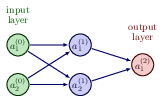

I also recommend Michael Nielsen's intuitive approach to the neural networks and the universal approximation theorem, see the slides at http://neuralnetworksanddeeplearning.com/chap4.html.
Note: some of the codes will also be discussed next week in connection with the solution of differential equations.
Last week we discussed the basics of neural networks and deep learning and the basics of automatic differentiation. We looked also at examples on how compute the parameters of a simple network with scalar inputs and ouputs and no or just one hidden layers.
We ended our discussions with the derivation of the equations for a neural network with one hidden layers and two input variables and two hidden nodes but only one output node.
As yet another example we define now a simple perceptron model with all quantities given by scalars. We consider only one input variable \( x \) and one target value \( y \). We define an activation function \( \sigma_1 \) which takes as input
$$ z_1 = w_1x+b_1, $$where \( w_1 \) is the weight and \( b_1 \) is the bias. These are the parameters we want to optimize. The output is \( a_1=\sigma(z_1) \) (see graph from whiteboard notes). This output is then fed into the cost/loss function, which we here for the sake of simplicity just define as the squared error
$$ C(x;w_1,b_1)=\frac{1}{2}(a_1-y)^2. $$
In setting up the feed forward and back propagation parts of the algorithm, we need now the derivative of the various variables we want to train.
We need
$$ \frac{\partial C}{\partial w_1} \hspace{0.1cm}\mathrm{and}\hspace{0.1cm}\frac{\partial C}{\partial b_1}. $$Using the chain rule we find
$$ \frac{\partial C}{\partial w_1}=\frac{\partial C}{\partial a_1}\frac{\partial a_1}{\partial z_1}\frac{\partial z_1}{\partial w_1}=(a_1-y)\sigma_1'x, $$and
$$ \frac{\partial C}{\partial b_1}=\frac{\partial C}{\partial a_1}\frac{\partial a_1}{\partial z_1}\frac{\partial z_1}{\partial b_1}=(a_1-y)\sigma_1', $$which we later will just define as
$$ \frac{\partial C}{\partial a_1}\frac{\partial a_1}{\partial z_1}=\delta_1. $$We change our simple model to (see graph) a network with just one hidden layer but with scalar variables only.
Our output variable changes to \( a_2 \) and \( a_1 \) is now the output from the hidden node and \( a_0=x \). We have then
$$ z_1 = w_1a_0+b_1 \hspace{0.1cm} \wedge a_1 = \sigma_1(z_1), $$ $$ z_2 = w_2a_1+b_2 \hspace{0.1cm} \wedge a_2 = \sigma_2(z_2), $$and the cost function
$$ C(x;\boldsymbol{\Theta})=\frac{1}{2}(a_2-y)^2, $$with \( \boldsymbol{\Theta}=[w_1,w_2,b_1,b_2] \).

The derivatives are now, using the chain rule again
$$ \frac{\partial C}{\partial w_2}=\frac{\partial C}{\partial a_2}\frac{\partial a_2}{\partial z_2}\frac{\partial z_2}{\partial w_2}=(a_2-y)\sigma_2'a_1=\delta_2a_1, $$ $$ \frac{\partial C}{\partial b_2}=\frac{\partial C}{\partial a_2}\frac{\partial a_2}{\partial z_2}\frac{\partial z_2}{\partial b_2}=(a_2-y)\sigma_2'=\delta_2, $$ $$ \frac{\partial C}{\partial w_1}=\frac{\partial C}{\partial a_2}\frac{\partial a_2}{\partial z_2}\frac{\partial z_2}{\partial a_1}\frac{\partial a_1}{\partial z_1}\frac{\partial z_1}{\partial w_1}=(a_2-y)\sigma_2'a_1\sigma_1'a_0, $$ $$ \frac{\partial C}{\partial b_1}=\frac{\partial C}{\partial a_2}\frac{\partial a_2}{\partial z_2}\frac{\partial z_2}{\partial a_1}\frac{\partial a_1}{\partial z_1}\frac{\partial z_1}{\partial b_1}=(a_2-y)\sigma_2'\sigma_1'=\delta_1. $$Can you generalize this to more than one hidden layer?
From the above equations we see that the derivatives of the activation functions play a central role. If they vanish, the training may stop. This is called the vanishing gradient problem, see discussions below. If they become large, the parameters \( w_i \) and \( b_i \) may simply go to infinity. This is referenced as the exploding gradient problem.
The training of the parameters is done through various gradient descent approximations with
$$ w_{i}\leftarrow w_{i}- \eta \delta_i a_{i-1}, $$and
$$ b_i \leftarrow b_i-\eta \delta_i, $$with \( \eta \) is the learning rate.
One iteration consists of one feed forward step and one back-propagation step. Each back-propagation step does one update of the parameters \( \boldsymbol{\Theta} \).
For the first hidden layer \( a_{i-1}=a_0=x \) for this simple model.
The code here implements the above model with one hidden layer and scalar variables for the same function we studied in the previous example. The code is however set up so that we can add multiple inputs \( x \) and target values \( y \). Note also that we have the possibility of defining a feature matrix \( \boldsymbol{X} \) with more than just one column for the input values. This will turn useful in our next example. We have also defined matrices and vectors for all of our operations although it is not necessary here.
import numpy as np
# We use the Sigmoid function as activation function
def sigmoid(z):
return 1.0/(1.0+np.exp(-z))
def forwardpropagation(x):
# weighted sum of inputs to the hidden layer
z_1 = np.matmul(x, w_1) + b_1
# activation in the hidden layer
a_1 = sigmoid(z_1)
# weighted sum of inputs to the output layer
z_2 = np.matmul(a_1, w_2) + b_2
a_2 = z_2
return a_1, a_2
def backpropagation(x, y):
a_1, a_2 = forwardpropagation(x)
# parameter delta for the output layer, note that a_2=z_2 and its derivative wrt z_2 is just 1
delta_2 = a_2 - y
print(0.5*((a_2-y)**2))
# delta for the hidden layer
delta_1 = np.matmul(delta_2, w_2.T) * a_1 * (1 - a_1)
# gradients for the output layer
output_weights_gradient = np.matmul(a_1.T, delta_2)
output_bias_gradient = np.sum(delta_2, axis=0)
# gradient for the hidden layer
hidden_weights_gradient = np.matmul(x.T, delta_1)
hidden_bias_gradient = np.sum(delta_1, axis=0)
return output_weights_gradient, output_bias_gradient, hidden_weights_gradient, hidden_bias_gradient
# ensure the same random numbers appear every time
np.random.seed(0)
# Input variable
x = np.array([4.0],dtype=np.float64)
# Target values
y = 2*x+1.0
# Defining the neural network, only scalars here
n_inputs = x.shape
n_features = 1
n_hidden_neurons = 1
n_outputs = 1
# Initialize the network
# weights and bias in the hidden layer
w_1 = np.random.randn(n_features, n_hidden_neurons)
b_1 = np.zeros(n_hidden_neurons) + 0.01
# weights and bias in the output layer
w_2 = np.random.randn(n_hidden_neurons, n_outputs)
b_2 = np.zeros(n_outputs) + 0.01
eta = 0.1
for i in range(50):
# calculate gradients
derivW2, derivB2, derivW1, derivB1 = backpropagation(x, y)
# update weights and biases
w_2 -= eta * derivW2
b_2 -= eta * derivB2
w_1 -= eta * derivW1
b_1 -= eta * derivB1
We see that after some few iterations (the results do depend on the learning rate however), we get an error which is rather small.
Let us now try to increase our level of ambition and attempt at setting up the equations for a neural network with two input nodes, one hidden layer with two hidden nodes and one output layer with one output node/neuron only (see graph)..
We need to define the following parameters and variables with the input layer (layer \( (0) \)) where we label the nodes \( x_0 \) and \( x_1 \)
$$ x_0 = a_0^{(0)} \wedge x_1 = a_1^{(0)}. $$The hidden layer (layer \( (1) \)) has nodes which yield the outputs \( a_0^{(1)} \) and \( a_1^{(1)} \)) with weight \( \boldsymbol{w} \) and bias \( \boldsymbol{b} \) parameters
$$ w_{ij}^{(1)}=\left\{w_{00}^{(1)},w_{01}^{(1)},w_{10}^{(1)},w_{11}^{(1)}\right\} \wedge b^{(1)}=\left\{b_0^{(1)},b_1^{(1)}\right\}. $$
Finally, we have the ouput layer given by layer label \( (2) \) with output \( a^{(2)} \) and weights and biases to be determined given by the variables
$$ w_{i}^{(2)}=\left\{w_{0}^{(2)},w_{1}^{(2)}\right\} \wedge b^{(2)}. $$Our output is \( \tilde{y}=a^{(2)} \) and we define a generic cost function \( C(a^{(2)},y;\boldsymbol{\Theta}) \) where \( y \) is the target value (a scalar here). The parameters we need to optimize are given by
$$ \boldsymbol{\Theta}=\left\{w_{00}^{(1)},w_{01}^{(1)},w_{10}^{(1)},w_{11}^{(1)},w_{0}^{(2)},w_{1}^{(2)},b_0^{(1)},b_1^{(1)},b^{(2)}\right\}. $$We can define the inputs to the activation functions for the various layers in terms of various matrix-vector multiplications and vector additions. The inputs to the first hidden layer are
$$ \begin{bmatrix}z_0^{(1)} \\ z_1^{(1)} \end{bmatrix}=\left(\begin{bmatrix}w_{00}^{(1)} & w_{01}^{(1)}\\ w_{10}^{(1)} &w_{11}^{(1)} \end{bmatrix}\right)^{T}\begin{bmatrix}a_0^{(0)} \\ a_1^{(0)} \end{bmatrix}+\begin{bmatrix}b_0^{(1)} \\ b_1^{(1)} \end{bmatrix}, $$with outputs
$$ \begin{bmatrix}a_0^{(1)} \\ a_1^{(1)} \end{bmatrix}=\begin{bmatrix}\sigma^{(1)}(z_0^{(1)}) \\ \sigma^{(1)}(z_1^{(1)}) \end{bmatrix}. $$For the final output layer we have the inputs to the final activation function
$$ z^{(2)} = w_{0}^{(2)}a_0^{(1)} +w_{1}^{(2)}a_1^{(1)}+b^{(2)}, $$resulting in the output
$$ a^{(2)}=\sigma^{(2)}(z^{(2)}). $$In total we have nine parameters which we need to train. Using the chain rule (or just the back-propagation algorithm) we can find all derivatives. Since we will use automatic differentiation in reverse mode, we start with the derivatives of the cost function with respect to the parameters of the output layer, namely
$$ \frac{\partial C}{\partial w_{i}^{(2)}}=\frac{\partial C}{\partial a^{(2)}}\frac{\partial a^{(2)}}{\partial z^{(2)}}\frac{\partial z^{(2)}}{\partial w_{i}^{(2)}}=\delta^{(2)}a_i^{(1)}, $$with
$$ \delta^{(2)}=\frac{\partial C}{\partial a^{(2)}}\frac{\partial a^{(2)}}{\partial z^{(2)}} $$and finally
$$ \frac{\partial C}{\partial b^{(2)}}=\frac{\partial C}{\partial a^{(2)}}\frac{\partial a^{(2)}}{\partial z^{(2)}}\frac{\partial z^{(2)}}{\partial b^{(2)}}=\delta^{(2)}. $$Using the chain rule we have the following expressions for say one of the weight parameters (it is easy to generalize to the other weight parameters)
$$ \frac{\partial C}{\partial w_{00}^{(1)}}=\frac{\partial C}{\partial a^{(2)}}\frac{\partial a^{(2)}}{\partial z^{(2)}} \frac{\partial z^{(2)}}{\partial z_0^{(1)}}\frac{\partial z_0^{(1)}}{\partial w_{00}^{(1)}}= \delta^{(2)}\frac{\partial z^{(2)}}{\partial z_0^{(1)}}\frac{\partial z_0^{(1)}}{\partial w_{00}^{(1)}}, $$which, noting that
$$ z^{(2)} =w_0^{(2)}a_0^{(1)}+w_1^{(2)}a_1^{(1)}+b^{(2)}, $$allows us to rewrite
$$ \frac{\partial z^{(2)}}{\partial z_0^{(1)}}\frac{\partial z_0^{(1)}}{\partial w_{00}^{(1)}}=w_0^{(2)}\frac{\partial a_0^{(1)}}{\partial z_0^{(1)}}a_0^{(1)}. $$Defining
$$ \delta_0^{(1)}=w_0^{(2)}\frac{\partial a_0^{(1)}}{\partial z_0^{(1)}}\delta^{(2)}, $$we have
$$ \frac{\partial C}{\partial w_{00}^{(1)}}=\delta_0^{(1)}a_0^{(1)}. $$Similarly, we obtain
$$ \frac{\partial C}{\partial w_{01}^{(1)}}=\delta_0^{(1)}a_1^{(1)}. $$Similarly, we find
$$ \frac{\partial C}{\partial w_{10}^{(1)}}=\delta_1^{(1)}a_0^{(1)}, $$and
$$ \frac{\partial C}{\partial w_{11}^{(1)}}=\delta_1^{(1)}a_1^{(1)}, $$where we have defined
$$ \delta_1^{(1)}=w_1^{(2)}\frac{\partial a_1^{(1)}}{\partial z_1^{(1)}}\delta^{(2)}. $$For the sake of completeness, we list the derivatives of the biases, which are
$$ \frac{\partial C}{\partial b_{0}^{(1)}}=\delta_0^{(1)}, $$and
$$ \frac{\partial C}{\partial b_{1}^{(1)}}=\delta_1^{(1)}. $$As we will see below, these expressions can be generalized in a more compact form.
For this specific model, with just one output node and two hidden nodes, the gradient descent equations take the following form for output layer
$$ w_{i}^{(2)}\leftarrow w_{i}^{(2)}- \eta \delta^{(2)} a_{i}^{(1)}, $$and
$$ b^{(2)} \leftarrow b^{(2)}-\eta \delta^{(2)}, $$and
$$ w_{ij}^{(1)}\leftarrow w_{ij}^{(1)}- \eta \delta_{i}^{(1)} a_{j}^{(0)}, $$and
$$ b_{i}^{(1)} \leftarrow b_{i}^{(1)}-\eta \delta_{i}^{(1)}, $$where \( \eta \) is the learning rate.
The questions we want to ask are how do changes in the biases and the weights in our network change the cost function and how can we use the final output to modify the weights and biases?
To derive these equations let us start with a plain regression problem and define our cost function as
$$ {\cal C}(\boldsymbol{\Theta}) = \frac{1}{2}\sum_{i=1}^n\left(y_i - \tilde{y}_i\right)^2, $$where the $y_i$s are our \( n \) targets (the values we want to reproduce), while the outputs of the network after having propagated all inputs \( \boldsymbol{x} \) are given by \( \boldsymbol{\tilde{y}}_i \).

With our definition of the targets \( \boldsymbol{y} \), the outputs of the network \( \boldsymbol{\tilde{y}} \) and the inputs \( \boldsymbol{x} \) we define now the activation \( z_j^l \) of node/neuron/unit \( j \) of the \( l \)-th layer as a function of the bias, the weights which add up from the previous layer \( l-1 \) and the forward passes/outputs \( \boldsymbol{a}^{l-1} \) from the previous layer as
$$ z_j^l = \sum_{i=1}^{M_{l-1}}w_{ij}^la_i^{l-1}+b_j^l, $$where \( b_k^l \) are the biases from layer \( l \). Here \( M_{l-1} \) represents the total number of nodes/neurons/units of layer \( l-1 \). The figure in the whiteboard notes illustrates this equation. We can rewrite this in a more compact form as the matrix-vector products we discussed earlier,
$$ \boldsymbol{z}^l = \left(\boldsymbol{W}^l\right)^T\boldsymbol{a}^{l-1}+\boldsymbol{b}^l. $$With the activation values \( \boldsymbol{z}^l \) we can in turn define the output of layer \( l \) as \( \boldsymbol{a}^l = \sigma(\boldsymbol{z}^l) \) where \( \sigma \) is our activation function. In the examples here we will use the sigmoid function discussed in our logistic regression lectures. We will also use the same activation function \( \sigma \) for all layers and their nodes. It means we have
$$ a_j^l = \sigma(z_j^l) = \frac{1}{1+\exp{-(z_j^l)}}. $$From the definition of the input variable to the activation function, that is \( z_j^l \) we have
$$ \frac{\partial z_j^l}{\partial w_{ij}^l} = a_i^{l-1}, $$and
$$ \frac{\partial z_j^l}{\partial a_i^{l-1}} = w_{ji}^l. $$With our definition of the activation function we have that (note that this function depends only on \( z_j^l \))
$$ \frac{\partial a_j^l}{\partial z_j^{l}} = a_j^l(1-a_j^l)=\sigma(z_j^l)(1-\sigma(z_j^l)). $$With these definitions we can now compute the derivative of the cost function in terms of the weights.
Let us specialize to the output layer \( l=L \). Our cost function is
$$ {\cal C}(\boldsymbol{\Theta}^L) = \frac{1}{2}\sum_{i=1}^n\left(y_i - \tilde{y}_i\right)^2=\frac{1}{2}\sum_{i=1}^n\left(a_i^L - y_i\right)^2, $$The derivative of this function with respect to the weights is
$$ \frac{\partial{\cal C}(\boldsymbol{\Theta}^L)}{\partial w_{ij}^L} = \left(a_j^L - y_j\right)\frac{\partial a_j^L}{\partial w_{ij}^{L}}, $$The last partial derivative can easily be computed and reads (by applying the chain rule)
$$ \frac{\partial a_j^L}{\partial w_{ij}^{L}} = \frac{\partial a_j^L}{\partial z_{j}^{L}}\frac{\partial z_j^L}{\partial w_{ij}^{L}}=a_j^L(1-a_j^L)a_i^{L-1}. $$We have thus
$$ \frac{\partial{\cal C}((\boldsymbol{\Theta}^L)}{\partial w_{ij}^L} = \left(a_j^L - y_j\right)a_j^L(1-a_j^L)a_i^{L-1}, $$Defining
$$ \delta_j^L = a_j^L(1-a_j^L)\left(a_j^L - y_j\right) = \sigma'(z_j^L)\frac{\partial {\cal C}}{\partial (a_j^L)}, $$and using the Hadamard product of two vectors we can write this as
$$ \boldsymbol{\delta}^L = \sigma'(\boldsymbol{z}^L)\circ\frac{\partial {\cal C}}{\partial (\boldsymbol{a}^L)}. $$This is an important expression. The second term on the right handside measures how fast the cost function is changing as a function of the $j$th output activation. If, for example, the cost function doesn't depend much on a particular output node \( j \), then \( \delta_j^L \) will be small, which is what we would expect. The first term on the right, measures how fast the activation function \( f \) is changing at a given activation value \( z_j^L \).
Notice that everything in the above equations is easily computed. In particular, we compute \( z_j^L \) while computing the behaviour of the network, and it is only a small additional overhead to compute \( \sigma'(z^L_j) \). The exact form of the derivative with respect to the output depends on the form of the cost function. However, provided the cost function is known there should be little trouble in calculating
$$ \frac{\partial {\cal C}}{\partial (a_j^L)} $$With the definition of \( \delta_j^L \) we have a more compact definition of the derivative of the cost function in terms of the weights, namely
$$ \frac{\partial{\cal C}}{\partial w_{ij}^L} = \delta_j^La_i^{L-1}. $$It is also easy to see that our previous equation can be written as
$$ \delta_j^L =\frac{\partial {\cal C}}{\partial z_j^L}= \frac{\partial {\cal C}}{\partial a_j^L}\frac{\partial a_j^L}{\partial z_j^L}, $$which can also be interpreted as the partial derivative of the cost function with respect to the biases \( b_j^L \), namely
$$ \delta_j^L = \frac{\partial {\cal C}}{\partial b_j^L}\frac{\partial b_j^L}{\partial z_j^L}=\frac{\partial {\cal C}}{\partial b_j^L}, $$That is, the error \( \delta_j^L \) is exactly equal to the rate of change of the cost function as a function of the bias.
We have now three equations that are essential for the computations of the derivatives of the cost function at the output layer. These equations are needed to start the algorithm and they are
$$ \begin{equation} \frac{\partial{\cal C}(\boldsymbol{W^L})}{\partial w_{ij}^L} = \delta_j^La_i^{L-1}, \label{_auto1} \end{equation} $$and
$$ \begin{equation} \delta_j^L = \sigma'(z_j^L)\frac{\partial {\cal C}}{\partial (a_j^L)}, \label{_auto2} \end{equation} $$and
$$ \begin{equation} \delta_j^L = \frac{\partial {\cal C}}{\partial b_j^L}, \label{_auto3} \end{equation} $$We have that (replacing \( L \) with a general layer \( l \))
$$ \delta_j^l =\frac{\partial {\cal C}}{\partial z_j^l}. $$We want to express this in terms of the equations for layer \( l+1 \).
We obtain
$$ \delta_j^l =\sum_k \frac{\partial {\cal C}}{\partial z_k^{l+1}}\frac{\partial z_k^{l+1}}{\partial z_j^{l}}=\sum_k \delta_k^{l+1}\frac{\partial z_k^{l+1}}{\partial z_j^{l}}, $$and recalling that
$$ z_j^{l+1} = \sum_{i=1}^{M_{l}}w_{ij}^{l+1}a_i^{l}+b_j^{l+1}, $$with \( M_l \) being the number of nodes in layer \( l \), we obtain
$$ \delta_j^l =\sum_k \delta_k^{l+1}w_{kj}^{l+1}\sigma'(z_j^l), $$This is our final equation.
We are now ready to set up the algorithm for back propagation and learning the weights and biases.
The four equations provide us with a way of computing the gradient of the cost function. Let us write this out in the form of an algorithm.
First, we set up the input data \( \boldsymbol{x} \) and the activations \( \boldsymbol{z}_1 \) of the input layer and compute the activation function and the pertinent outputs \( \boldsymbol{a}^1 \).
Secondly, we perform then the feed forward till we reach the output layer and compute all \( \boldsymbol{z}_l \) of the input layer and compute the activation function and the pertinent outputs \( \boldsymbol{a}^l \) for \( l=1,2,3,\dots,L \).
Notation: The first hidden layer has \( l=1 \) as label and the final output layer has \( l=L \).
Thereafter we compute the ouput error \( \boldsymbol{\delta}^L \) by computing all
$$ \delta_j^L = \sigma'(z_j^L)\frac{\partial {\cal C}}{\partial (a_j^L)}. $$Then we compute the back propagate error for each \( l=L-1,L-2,\dots,1 \) as
$$ \delta_j^l = \sum_k \delta_k^{l+1}w_{kj}^{l+1}\sigma'(z_j^l). $$Finally, we update the weights and the biases using gradient descent for each \( l=L-1,L-2,\dots,1 \) (the first hidden layer) and update the weights and biases according to the rules
$$ w_{ij}^l\leftarrow = w_{ij}^l- \eta \delta_j^la_i^{l-1}, $$ $$ b_j^l \leftarrow b_j^l-\eta \frac{\partial {\cal C}}{\partial b_j^l}=b_j^l-\eta \delta_j^l, $$with \( \eta \) being the learning rate.
With the back propagate error for each \( l=L-1,L-2,\dots,1 \) as
$$ \delta_j^l = \sum_k \delta_k^{l+1}w_{kj}^{l+1}\sigma'(z_j^l), $$we update the weights and the biases using gradient descent for each \( l=L-1,L-2,\dots,1 \) and update the weights and biases according to the rules
$$ w_{ij}^l\leftarrow = w_{ij}^l- \eta \delta_j^la_i^{l-1}, $$ $$ b_j^l \leftarrow b_j^l-\eta \frac{\partial {\cal C}}{\partial b_j^l}=b_j^l-\eta \delta_j^l, $$A property that characterizes a neural network, other than its connectivity, is the choice of activation function(s). As described in, the following restrictions are imposed on an activation function for a FFNN to fulfill the universal approximation theorem
The second requirement excludes all linear functions. Furthermore, in a MLP with only linear activation functions, each layer simply performs a linear transformation of its inputs.
Regardless of the number of layers, the output of the NN will be nothing but a linear function of the inputs. Thus we need to introduce some kind of non-linearity to the NN to be able to fit non-linear functions Typical examples are the logistic Sigmoid
$$ \sigma(x) = \frac{1}{1 + e^{-x}}, $$and the hyperbolic tangent function
$$ \sigma(x) = \tanh(x) $$The sigmoid function are more biologically plausible because the output of inactive neurons are zero. Such activation function are called one-sided. However, it has been shown that the hyperbolic tangent performs better than the sigmoid for training MLPs. has become the most popular for deep neural networks
"""The sigmoid function (or the logistic curve) is a
function that takes any real number, z, and outputs a number (0,1).
It is useful in neural networks for assigning weights on a relative scale.
The value z is the weighted sum of parameters involved in the learning algorithm."""
import numpy
import matplotlib.pyplot as plt
import math as mt
z = numpy.arange(-5, 5, .1)
sigma_fn = numpy.vectorize(lambda z: 1/(1+numpy.exp(-z)))
sigma = sigma_fn(z)
fig = plt.figure()
ax = fig.add_subplot(111)
ax.plot(z, sigma)
ax.set_ylim([-0.1, 1.1])
ax.set_xlim([-5,5])
ax.grid(True)
ax.set_xlabel('z')
ax.set_title('sigmoid function')
plt.show()
"""Step Function"""
z = numpy.arange(-5, 5, .02)
step_fn = numpy.vectorize(lambda z: 1.0 if z >= 0.0 else 0.0)
step = step_fn(z)
fig = plt.figure()
ax = fig.add_subplot(111)
ax.plot(z, step)
ax.set_ylim([-0.5, 1.5])
ax.set_xlim([-5,5])
ax.grid(True)
ax.set_xlabel('z')
ax.set_title('step function')
plt.show()
"""Sine Function"""
z = numpy.arange(-2*mt.pi, 2*mt.pi, 0.1)
t = numpy.sin(z)
fig = plt.figure()
ax = fig.add_subplot(111)
ax.plot(z, t)
ax.set_ylim([-1.0, 1.0])
ax.set_xlim([-2*mt.pi,2*mt.pi])
ax.grid(True)
ax.set_xlabel('z')
ax.set_title('sine function')
plt.show()
"""Plots a graph of the squashing function used by a rectified linear
unit"""
z = numpy.arange(-2, 2, .1)
zero = numpy.zeros(len(z))
y = numpy.max([zero, z], axis=0)
fig = plt.figure()
ax = fig.add_subplot(111)
ax.plot(z, y)
ax.set_ylim([-2.0, 2.0])
ax.set_xlim([-2.0, 2.0])
ax.grid(True)
ax.set_xlabel('z')
ax.set_title('Rectified linear unit')
plt.show()
The flexibility of neural networks is also one of their main drawbacks: there are many hyperparameters to tweak. Not only can you use any imaginable network topology (how neurons/nodes are interconnected), but even in a simple FFNN you can change the number of layers, the number of neurons per layer, the type of activation function to use in each layer, the weight initialization logic, the stochastic gradient optmized and much more. How do you know what combination of hyperparameters is the best for your task?
However,since there are many hyperparameters to tune, and since training a neural network on a large dataset takes a lot of time, you will only be able to explore a tiny part of the hyperparameter space.
For many problems you can start with just one or two hidden layers and it will work just fine. For the MNIST data set you ca easily get a high accuracy using just one hidden layer with a few hundred neurons. You can reach for this data set above 98% accuracy using two hidden layers with the same total amount of neurons, in roughly the same amount of training time.
For more complex problems, you can gradually ramp up the number of hidden layers, until you start overfitting the training set. Very complex tasks, such as large image classification or speech recognition, typically require networks with dozens of layers and they need a huge amount of training data. However, you will rarely have to train such networks from scratch: it is much more common to reuse parts of a pretrained state-of-the-art network that performs a similar task.
The Back propagation algorithm we derived above works by going from the output layer to the input layer, propagating the error gradient on the way. Once the algorithm has computed the gradient of the cost function with regards to each parameter in the network, it uses these gradients to update each parameter with a Gradient Descent (GD) step.
Unfortunately for us, the gradients often get smaller and smaller as the algorithm progresses down to the first hidden layers. As a result, the GD update leaves the lower layer connection weights virtually unchanged, and training never converges to a good solution. This is known in the literature as the vanishing gradients problem.
In other cases, the opposite can happen, namely the the gradients can grow bigger and bigger. The result is that many of the layers get large updates of the weights the algorithm diverges. This is the exploding gradients problem, which is mostly encountered in recurrent neural networks. More generally, deep neural networks suffer from unstable gradients, different layers may learn at widely different speeds
Although this unfortunate behavior has been empirically observed for quite a while (it was one of the reasons why deep neural networks were mostly abandoned for a long time), it is only around 2010 that significant progress was made in understanding it.
A paper titled Understanding the Difficulty of Training Deep Feedforward Neural Networks by Xavier Glorot and Yoshua Bengio found that the problems with the popular logistic sigmoid activation function and the weight initialization technique that was most popular at the time, namely random initialization using a normal distribution with a mean of 0 and a standard deviation of 1.
They showed that with this activation function and this initialization scheme, the variance of the outputs of each layer is much greater than the variance of its inputs. Going forward in the network, the variance keeps increasing after each layer until the activation function saturates at the top layers. This is actually made worse by the fact that the logistic function has a mean of 0.5, not 0 (the hyperbolic tangent function has a mean of 0 and behaves slightly better than the logistic function in deep networks).
Looking at the logistic activation function, when inputs become large (negative or positive), the function saturates at 0 or 1, with a derivative extremely close to 0. Thus when backpropagation kicks in, it has virtually no gradient to propagate back through the network, and what little gradient exists keeps getting diluted as backpropagation progresses down through the top layers, so there is really nothing left for the lower layers.
In their paper, Glorot and Bengio propose a way to significantly alleviate this problem. We need the signal to flow properly in both directions: in the forward direction when making predictions, and in the reverse direction when backpropagating gradients. We don’t want the signal to die out, nor do we want it to explode and saturate. For the signal to flow properly, the authors argue that we need the variance of the outputs of each layer to be equal to the variance of its inputs, and we also need the gradients to have equal variance before and after flowing through a layer in the reverse direction.
One of the insights in the 2010 paper by Glorot and Bengio was that the vanishing/exploding gradients problems were in part due to a poor choice of activation function. Until then most people had assumed that if Nature had chosen to use roughly sigmoid activation functions in biological neurons, they must be an excellent choice. But it turns out that other activation functions behave much better in deep neural networks, in particular the ReLU activation function, mostly because it does not saturate for positive values (and also because it is quite fast to compute).
The ReLU activation function suffers from a problem known as the dying ReLUs: during training, some neurons effectively die, meaning they stop outputting anything other than 0.
In some cases, you may find that half of your network’s neurons are dead, especially if you used a large learning rate. During training, if a neuron’s weights get updated such that the weighted sum of the neuron’s inputs is negative, it will start outputting 0. When this happen, the neuron is unlikely to come back to life since the gradient of the ReLU function is 0 when its input is negative.
To solve this problem, nowadays practitioners use a variant of the ReLU function, such as the leaky ReLU discussed above or the so-called exponential linear unit (ELU) function
$$ ELU(z) = \left\{\begin{array}{cc} \alpha\left( \exp{(z)}-1\right) & z < 0,\\ z & z \ge 0.\end{array}\right. $$In general it seems that the ELU activation function is better than the leaky ReLU function (and its variants), which is better than ReLU. ReLU performs better than \( \tanh \) which in turn performs better than the logistic function.
If runtime performance is an issue, then you may opt for the leaky ReLU function over the ELU function If you don’t want to tweak yet another hyperparameter, you may just use the default \( \alpha \) of \( 0.01 \) for the leaky ReLU, and \( 1 \) for ELU. If you have spare time and computing power, you can use cross-validation or bootstrap to evaluate other activation functions.
In most cases you can use the ReLU activation function in the hidden layers (or one of its variants).
It is a bit faster to compute than other activation functions, and the gradient descent optimization does in general not get stuck.
For the output layer:Batch Normalization aims to address the vanishing/exploding gradients problems, and more generally the problem that the distribution of each layer’s inputs changes during training, as the parameters of the previous layers change.
The technique consists of adding an operation in the model just before the activation function of each layer, simply zero-centering and normalizing the inputs, then scaling and shifting the result using two new parameters per layer (one for scaling, the other for shifting). In other words, this operation lets the model learn the optimal scale and mean of the inputs for each layer. In order to zero-center and normalize the inputs, the algorithm needs to estimate the inputs’ mean and standard deviation. It does so by evaluating the mean and standard deviation of the inputs over the current mini-batch, from this the name batch normalization.
It is a fairly simple algorithm: at every training step, every neuron (including the input neurons but excluding the output neurons) has a probability \( p \) of being temporarily dropped out, meaning it will be entirely ignored during this training step, but it may be active during the next step.
The hyperparameter \( p \) is called the dropout rate, and it is typically set to 50%. After training, the neurons are not dropped anymore. It is viewed as one of the most popular regularization techniques.
A popular technique to lessen the exploding gradients problem is to simply clip the gradients during backpropagation so that they never exceed some threshold (this is mostly useful for recurrent neural networks).
This technique is called Gradient Clipping.
In general however, Batch Normalization is preferred.
The first thing we would like to do is divide the data into two or three parts. A training set, a validation or dev (development) set, and a test set. The test set is the data on which we want to make predictions. The dev set is a subset of the training data we use to check how well we are doing out-of-sample, after training the model on the training dataset. We use the validation error as a proxy for the test error in order to make tweaks to our model. It is crucial that we do not use any of the test data to train the algorithm. This is a cardinal sin in ML. Then:
If the validation and test sets are drawn from the same distributions, then a good performance on the validation set should lead to similarly good performance on the test set.
However, sometimes the training data and test data differ in subtle ways because, for example, they are collected using slightly different methods, or because it is cheaper to collect data in one way versus another. In this case, there can be a mismatch between the training and test data. This can lead to the neural network overfitting these small differences between the test and training sets, and a poor performance on the test set despite having a good performance on the validation set. To rectify this, Andrew Ng suggests making two validation or dev sets, one constructed from the training data and one constructed from the test data. The difference between the performance of the algorithm on these two validation sets quantifies the train-test mismatch. This can serve as another important diagnostic when using DNNs for supervised learning.
Like all statistical methods, supervised learning using neural networks has important limitations. This is especially important when one seeks to apply these methods, especially to physics problems. Like all tools, DNNs are not a universal solution. Often, the same or better performance on a task can be achieved by using a few hand-engineered features (or even a collection of random features).
Here we list some of the important limitations of supervised neural network based models.
Some of these remarks are particular to DNNs, others are shared by all supervised learning methods. This motivates the use of unsupervised methods which in part circumvent these problems.
Let us write this out in the form of an algorithm.
First, we set up the input data \( \boldsymbol{x} \) and the activations \( \boldsymbol{z}_1 \) of the input layer and compute the activation function and the pertinent outputs \( \boldsymbol{a}^1 \).
Secondly, we perform then the feed forward till we reach the output layer and compute all \( \boldsymbol{z}_l \) of the input layer and compute the activation function and the pertinent outputs \( \boldsymbol{a}^l \) for \( l=2,3,\dots,L \).
Thereafter we compute the ouput error \( \boldsymbol{\delta}^L \) by computing all
$$ \delta_j^L = f'(z_j^L)\frac{\partial {\cal C}}{\partial (a_j^L)}. $$
Then we compute the back propagate error for each \( l=L-1,L-2,\dots,2 \) as
$$ \delta_j^l = \sum_k \delta_k^{l+1}w_{kj}^{l+1}\sigma'(z_j^l). $$
Finally, we update the weights and the biases using gradient descent for each \( l=L-1,L-2,\dots,2 \) and update the weights and biases according to the rules
$$ w_{ij}^l\leftarrow = w_{ij}^l- \eta \delta_j^la_i^{l-1}, $$ $$ b_j^l \leftarrow b_j^l-\eta \frac{\partial {\cal C}}{\partial b_j^l}=b_j^l-\eta \delta_j^l, $$The parameter \( \eta \) is the learning parameter discussed in connection with the gradient descent methods. Here it is convenient to use stochastic gradient descent (see the examples below) with mini-batches with an outer loop that steps through multiple epochs of training.
We are now gong to develop an example based on the MNIST data base. This is a classification problem and we need to use our cross-entropy function we discussed in connection with logistic regression. The cross-entropy defines our cost function for the classificaton problems with neural networks.
In binary classification with two classes \( (0, 1) \) we define the logistic/sigmoid function as the probability that a particular input is in class \( 0 \) or \( 1 \). This is possible because the logistic function takes any input from the real numbers and inputs a number between 0 and 1, and can therefore be interpreted as a probability. It also has other nice properties, such as a derivative that is simple to calculate.
For an input \( \boldsymbol{a} \) from the hidden layer, the probability that the input \( \boldsymbol{x} \) is in class 0 or 1 is just. We let \( \theta \) represent the unknown weights and biases to be adjusted by our equations). The variable \( x \) represents our activation values \( z \). We have
$$ P(y = 0 \mid \boldsymbol{x}, \boldsymbol{\theta}) = \frac{1}{1 + \exp{(- \boldsymbol{x}})} , $$and
$$ P(y = 1 \mid \boldsymbol{x}, \boldsymbol{\theta}) = 1 - P(y = 0 \mid \boldsymbol{x}, \boldsymbol{\theta}) , $$where \( y \in \{0, 1\} \) and \( \boldsymbol{\theta} \) represents the weights and biases of our network.
Our cost function is given as (see the Logistic regression lectures)
$$ \mathcal{C}(\boldsymbol{\theta}) = - \ln P(\mathcal{D} \mid \boldsymbol{\theta}) = - \sum_{i=1}^n y_i \ln[P(y_i = 0)] + (1 - y_i) \ln [1 - P(y_i = 0)] = \sum_{i=1}^n \mathcal{L}_i(\boldsymbol{\theta}) . $$This last equality means that we can interpret our cost function as a sum over the loss function for each point in the dataset \( \mathcal{L}_i(\boldsymbol{\theta}) \). The negative sign is just so that we can think about our algorithm as minimizing a positive number, rather than maximizing a negative number.
In multiclass classification it is common to treat each integer label as a so called one-hot vector:
\( y = 5 \quad \rightarrow \quad \boldsymbol{y} = (0, 0, 0, 0, 0, 1, 0, 0, 0, 0) , \) and
\( y = 1 \quad \rightarrow \quad \boldsymbol{y} = (0, 1, 0, 0, 0, 0, 0, 0, 0, 0) , \)i.e. a binary bit string of length \( C \), where \( C = 10 \) is the number of classes in the MNIST dataset (numbers from \( 0 \) to \( 9 \))..
If \( \boldsymbol{x}_i \) is the \( i \)-th input (image), \( y_{ic} \) refers to the \( c \)-th component of the \( i \)-th output vector \( \boldsymbol{y}_i \). The probability of \( \boldsymbol{x}_i \) being in class \( c \) will be given by the softmax function:
$$ P(y_{ic} = 1 \mid \boldsymbol{x}_i, \boldsymbol{\theta}) = \frac{\exp{((\boldsymbol{a}_i^{hidden})^T \boldsymbol{w}_c)}} {\sum_{c'=0}^{C-1} \exp{((\boldsymbol{a}_i^{hidden})^T \boldsymbol{w}_{c'})}} , $$which reduces to the logistic function in the binary case. The likelihood of this \( C \)-class classifier is now given as:
$$ P(\mathcal{D} \mid \boldsymbol{\theta}) = \prod_{i=1}^n \prod_{c=0}^{C-1} [P(y_{ic} = 1)]^{y_{ic}} . $$Again we take the negative log-likelihood to define our cost function:
$$ \mathcal{C}(\boldsymbol{\theta}) = - \log{P(\mathcal{D} \mid \boldsymbol{\theta})}. $$See the logistic regression lectures for a full definition of the cost function.
The back propagation equations need now only a small change, namely the definition of a new cost function. We are thus ready to use the same equations as before!
As an example of the above, relevant for project 2 as well, let us consider a binary class. As discussed in our logistic regression lectures, we defined a cost function in terms of the parameters \( \beta \) as
$$ \mathcal{C}(\boldsymbol{\beta}) = - \sum_{i=1}^n \left(y_i\log{p(y_i \vert x_i,\boldsymbol{\beta})}+(1-y_i)\log{1-p(y_i \vert x_i,\boldsymbol{\beta})}\right), $$where we had defined the logistic (sigmoid) function
$$ p(y_i =1\vert x_i,\boldsymbol{\beta})=\frac{\exp{(\beta_0+\beta_1 x_i)}}{1+\exp{(\beta_0+\beta_1 x_i)}}, $$and
$$ p(y_i =0\vert x_i,\boldsymbol{\beta})=1-p(y_i =1\vert x_i,\boldsymbol{\beta}). $$The parameters \( \boldsymbol{\beta} \) were defined using a minimization method like gradient descent or Newton-Raphson's method.
Now we replace \( x_i \) with the activation \( z_i^l \) for a given layer \( l \) and the outputs as \( y_i=a_i^l=f(z_i^l) \), with \( z_i^l \) now being a function of the weights \( w_{ij}^l \) and biases \( b_i^l \). We have then
$$ a_i^l = y_i = \frac{\exp{(z_i^l)}}{1+\exp{(z_i^l)}}, $$with
$$ z_i^l = \sum_{j}w_{ij}^l a_j^{l-1}+b_i^l, $$where the superscript \( l-1 \) indicates that these are the outputs from layer \( l-1 \). Our cost function at the final layer \( l=L \) is now
$$ \mathcal{C}(\boldsymbol{W}) = - \sum_{i=1}^n \left(t_i\log{a_i^L}+(1-t_i)\log{(1-a_i^L)}\right), $$where we have defined the targets \( t_i \). The derivatives of the cost function with respect to the output \( a_i^L \) are then easily calculated and we get
$$ \frac{\partial \mathcal{C}(\boldsymbol{W})}{\partial a_i^L} = \frac{a_i^L-t_i}{a_i^L(1-a_i^L)}. $$In case we use another activation function than the logistic one, we need to evaluate other derivatives.
In case we employ the more general case given by the Softmax equation, we need to evaluate the derivative of the activation function with respect to the activation \( z_i^l \), that is we need
$$ \frac{\partial f(z_i^l)}{\partial w_{jk}^l} = \frac{\partial f(z_i^l)}{\partial z_j^l} \frac{\partial z_j^l}{\partial w_{jk}^l}= \frac{\partial f(z_i^l)}{\partial z_j^l}a_k^{l-1}. $$For the Softmax function we have
$$ f(z_i^l) = \frac{\exp{(z_i^l)}}{\sum_{m=1}^K\exp{(z_m^l)}}. $$Its derivative with respect to \( z_j^l \) gives
$$ \frac{\partial f(z_i^l)}{\partial z_j^l}= f(z_i^l)\left(\delta_{ij}-f(z_j^l)\right), $$which in case of the simply binary model reduces to having \( i=j \).
One can identify a set of key steps when using neural networks to solve supervised learning problems:
Here we will be using the MNIST dataset, which is readily available through the scikit-learn package. You may also find it for example here. The MNIST (Modified National Institute of Standards and Technology) database is a large database of handwritten digits that is commonly used for training various image processing systems. The MNIST dataset consists of 70 000 images of size \( 28\times 28 \) pixels, each labeled from 0 to 9. The scikit-learn dataset we will use consists of a selection of 1797 images of size \( 8\times 8 \) collected and processed from this database.
To feed data into a feed-forward neural network we need to represent the inputs as a design/feature matrix \( X = (n_{inputs}, n_{features}) \). Each row represents an input, in this case a handwritten digit, and each column represents a feature, in this case a pixel. The correct answers, also known as labels or targets are represented as a 1D array of integers \( Y = (n_{inputs}) = (5, 3, 1, 8,...) \).
As an example, say we want to build a neural network using supervised learning to predict Body-Mass Index (BMI) from measurements of height (in m) and weight (in kg). If we have measurements of 5 people the design/feature matrix could be for example:
$$ X = \begin{bmatrix} 1.85 & 81\\ 1.71 & 65\\ 1.95 & 103\\ 1.55 & 42\\ 1.63 & 56 \end{bmatrix} ,$$
and the targets would be:
$$ Y = (23.7, 22.2, 27.1, 17.5, 21.1) $$
Since each input image is a 2D matrix, we need to flatten the image (i.e. "unravel" the 2D matrix into a 1D array) to turn the data into a design/feature matrix. This means we lose all spatial information in the image, such as locality and translational invariance. More complicated architectures such as Convolutional Neural Networks can take advantage of such information, and are most commonly applied when analyzing images.
# import necessary packages
import numpy as np
import matplotlib.pyplot as plt
from sklearn import datasets
# ensure the same random numbers appear every time
np.random.seed(0)
# display images in notebook
%matplotlib inline
plt.rcParams['figure.figsize'] = (12,12)
# download MNIST dataset
digits = datasets.load_digits()
# define inputs and labels
inputs = digits.images
labels = digits.target
print("inputs = (n_inputs, pixel_width, pixel_height) = " + str(inputs.shape))
print("labels = (n_inputs) = " + str(labels.shape))
# flatten the image
# the value -1 means dimension is inferred from the remaining dimensions: 8x8 = 64
n_inputs = len(inputs)
inputs = inputs.reshape(n_inputs, -1)
print("X = (n_inputs, n_features) = " + str(inputs.shape))
# choose some random images to display
indices = np.arange(n_inputs)
random_indices = np.random.choice(indices, size=5)
for i, image in enumerate(digits.images[random_indices]):
plt.subplot(1, 5, i+1)
plt.axis('off')
plt.imshow(image, cmap=plt.cm.gray_r, interpolation='nearest')
plt.title("Label: %d" % digits.target[random_indices[i]])
plt.show()
Performing analysis before partitioning the dataset is a major error, that can lead to incorrect conclusions.
We will reserve \( 80 \% \) of our dataset for training and \( 20 \% \) for testing.
It is important that the train and test datasets are drawn randomly from our dataset, to ensure no bias in the sampling. Say you are taking measurements of weather data to predict the weather in the coming 5 days. You don't want to train your model on measurements taken from the hours 00.00 to 12.00, and then test it on data collected from 12.00 to 24.00.
from sklearn.model_selection import train_test_split
# one-liner from scikit-learn library
train_size = 0.8
test_size = 1 - train_size
X_train, X_test, Y_train, Y_test = train_test_split(inputs, labels, train_size=train_size,
test_size=test_size)
# equivalently in numpy
def train_test_split_numpy(inputs, labels, train_size, test_size):
n_inputs = len(inputs)
inputs_shuffled = inputs.copy()
labels_shuffled = labels.copy()
np.random.shuffle(inputs_shuffled)
np.random.shuffle(labels_shuffled)
train_end = int(n_inputs*train_size)
X_train, X_test = inputs_shuffled[:train_end], inputs_shuffled[train_end:]
Y_train, Y_test = labels_shuffled[:train_end], labels_shuffled[train_end:]
return X_train, X_test, Y_train, Y_test
#X_train, X_test, Y_train, Y_test = train_test_split_numpy(inputs, labels, train_size, test_size)
print("Number of training images: " + str(len(X_train)))
print("Number of test images: " + str(len(X_test)))
Our simple feed-forward neural network will consist of an input layer, a single hidden layer and an output layer. The activation \( y \) of each neuron is a weighted sum of inputs, passed through an activation function. In case of the simple perceptron model we have
$$ z = \sum_{i=1}^n w_i a_i ,$$
$$ y = f(z) ,$$
where \( f \) is the activation function, \( a_i \) represents input from neuron \( i \) in the preceding layer and \( w_i \) is the weight to input \( i \). The activation of the neurons in the input layer is just the features (e.g. a pixel value).
The simplest activation function for a neuron is the Heaviside function:
$$ f(z) = \begin{cases} 1, & z > 0\\ 0, & \text{otherwise} \end{cases} $$
A feed-forward neural network with this activation is known as a perceptron. For a binary classifier (i.e. two classes, 0 or 1, dog or not-dog) we can also use this in our output layer. This activation can be generalized to \( k \) classes (using e.g. the one-against-all strategy), and we call these architectures multiclass perceptrons.
However, it is now common to use the terms Single Layer Perceptron (SLP) (1 hidden layer) and Multilayer Perceptron (MLP) (2 or more hidden layers) to refer to feed-forward neural networks with any activation function.
Typical choices for activation functions include the sigmoid function, hyperbolic tangent, and Rectified Linear Unit (ReLU). We will be using the sigmoid function \( \sigma(x) \):
$$ f(x) = \sigma(x) = \frac{1}{1 + e^{-x}} ,$$
which is inspired by probability theory (see logistic regression) and was most commonly used until about 2011. See the discussion below concerning other activation functions.
Since each input image has 8x8 = 64 pixels or features, we have an input layer of 64 neurons.
We will use 50 neurons in the hidden layer receiving input from the neurons in the input layer. Since each neuron in the hidden layer is connected to the 64 inputs we have 64x50 = 3200 weights to the hidden layer.
If we were building a binary classifier, it would be sufficient with a single neuron in the output layer, which could output 0 or 1 according to the Heaviside function. This would be an example of a hard classifier, meaning it outputs the class of the input directly. However, if we are dealing with noisy data it is often beneficial to use a soft classifier, which outputs the probability of being in class 0 or 1.
For a soft binary classifier, we could use a single neuron and interpret the output as either being the probability of being in class 0 or the probability of being in class 1. Alternatively we could use 2 neurons, and interpret each neuron as the probability of being in each class.
Since we are doing multiclass classification, with 10 categories, it is natural to use 10 neurons in the output layer. We number the neurons \( j = 0,1,...,9 \). The activation of each output neuron \( j \) will be according to the softmax function:
$$ P(\text{class \( j \)} \mid \text{input \( \boldsymbol{a} \)}) = \frac{\exp{(\boldsymbol{a}^T \boldsymbol{w}_j)}} {\sum_{c=0}^{9} \exp{(\boldsymbol{a}^T \boldsymbol{w}_c)}} ,$$
i.e. each neuron \( j \) outputs the probability of being in class \( j \) given an input from the hidden layer \( \boldsymbol{a} \), with \( \boldsymbol{w}_j \) the weights of neuron \( j \) to the inputs. The denominator is a normalization factor to ensure the outputs (probabilities) sum up to 1. The exponent is just the weighted sum of inputs as before:
$$ z_j = \sum_{i=1}^n w_ {ij} a_i+b_j.$$
Since each neuron in the output layer is connected to the 50 inputs from the hidden layer we have 50x10 = 500 weights to the output layer.
Typically weights are initialized with small values distributed around zero, drawn from a uniform or normal distribution. Setting all weights to zero means all neurons give the same output, making the network useless.
Adding a bias value to the weighted sum of inputs allows the neural network to represent a greater range of values. Without it, any input with the value 0 will be mapped to zero (before being passed through the activation). The bias unit has an output of 1, and a weight to each neuron \( j \), \( b_j \):
$$ z_j = \sum_{i=1}^n w_ {ij} a_i + b_j.$$
The bias weights \( \boldsymbol{b} \) are often initialized to zero, but a small value like \( 0.01 \) ensures all neurons have some output which can be backpropagated in the first training cycle.
# building our neural network
n_inputs, n_features = X_train.shape
n_hidden_neurons = 50
n_categories = 10
# we make the weights normally distributed using numpy.random.randn
# weights and bias in the hidden layer
hidden_weights = np.random.randn(n_features, n_hidden_neurons)
hidden_bias = np.zeros(n_hidden_neurons) + 0.01
# weights and bias in the output layer
output_weights = np.random.randn(n_hidden_neurons, n_categories)
output_bias = np.zeros(n_categories) + 0.01
Denote \( F \) the number of features, \( H \) the number of hidden neurons and \( C \) the number of categories. For each input image we calculate a weighted sum of input features (pixel values) to each neuron \( j \) in the hidden layer \( l \):
$$ z_{j}^{l} = \sum_{i=1}^{F} w_{ij}^{l} x_i + b_{j}^{l},$$
this is then passed through our activation function
$$ a_{j}^{l} = f(z_{j}^{l}) .$$
We calculate a weighted sum of inputs (activations in the hidden layer) to each neuron \( j \) in the output layer:
$$ z_{j}^{L} = \sum_{i=1}^{H} w_{ij}^{L} a_{i}^{l} + b_{j}^{L}.$$
Finally we calculate the output of neuron \( j \) in the output layer using the softmax function:
$$ a_{j}^{L} = \frac{\exp{(z_j^{L})}} {\sum_{c=0}^{C-1} \exp{(z_c^{L})}} .$$
Since our data has the dimensions \( X = (n_{inputs}, n_{features}) \) and our weights to the hidden layer have the dimensions \( W_{hidden} = (n_{features}, n_{hidden}) \), we can easily feed the network all our training data in one go by taking the matrix product
$$ X W^{h} = (n_{inputs}, n_{hidden}),$$
and obtain a matrix that holds the weighted sum of inputs to the hidden layer for each input image and each hidden neuron. We also add the bias to obtain a matrix of weighted sums to the hidden layer \( Z^{h} \):
$$ \boldsymbol{z}^{l} = \boldsymbol{X} \boldsymbol{W}^{l} + \boldsymbol{b}^{l} ,$$
meaning the same bias (1D array with size equal number of hidden neurons) is added to each input image. This is then passed through the activation:
$$ \boldsymbol{a}^{l} = f(\boldsymbol{z}^l) .$$
This is fed to the output layer:
$$ \boldsymbol{z}^{L} = \boldsymbol{a}^{L} \boldsymbol{W}^{L} + \boldsymbol{b}^{L} .$$
Finally we receive our output values for each image and each category by passing it through the softmax function:
$$ output = softmax (\boldsymbol{z}^{L}) = (n_{inputs}, n_{categories}) .$$
# setup the feed-forward pass, subscript h = hidden layer
def sigmoid(x):
return 1/(1 + np.exp(-x))
def feed_forward(X):
# weighted sum of inputs to the hidden layer
z_h = np.matmul(X, hidden_weights) + hidden_bias
# activation in the hidden layer
a_h = sigmoid(z_h)
# weighted sum of inputs to the output layer
z_o = np.matmul(a_h, output_weights) + output_bias
# softmax output
# axis 0 holds each input and axis 1 the probabilities of each category
exp_term = np.exp(z_o)
probabilities = exp_term / np.sum(exp_term, axis=1, keepdims=True)
return probabilities
probabilities = feed_forward(X_train)
print("probabilities = (n_inputs, n_categories) = " + str(probabilities.shape))
print("probability that image 0 is in category 0,1,2,...,9 = \n" + str(probabilities[0]))
print("probabilities sum up to: " + str(probabilities[0].sum()))
print()
# we obtain a prediction by taking the class with the highest likelihood
def predict(X):
probabilities = feed_forward(X)
return np.argmax(probabilities, axis=1)
predictions = predict(X_train)
print("predictions = (n_inputs) = " + str(predictions.shape))
print("prediction for image 0: " + str(predictions[0]))
print("correct label for image 0: " + str(Y_train[0]))
To measure how well our neural network is doing we need to introduce a cost function. We will call the function that gives the error of a single sample output the loss function, and the function that gives the total error of our network across all samples the cost function. A typical choice for multiclass classification is the cross-entropy loss, also known as the negative log likelihood.
In multiclass classification it is common to treat each integer label as a so called one-hot vector:
$$ y = 5 \quad \rightarrow \quad \boldsymbol{y} = (0, 0, 0, 0, 0, 1, 0, 0, 0, 0) ,$$
$$ y = 1 \quad \rightarrow \quad \boldsymbol{y} = (0, 1, 0, 0, 0, 0, 0, 0, 0, 0) ,$$
i.e. a binary bit string of length \( C \), where \( C = 10 \) is the number of classes in the MNIST dataset.
Let \( y_{ic} \) denote the \( c \)-th component of the \( i \)-th one-hot vector. We define the cost function \( \mathcal{C} \) as a sum over the cross-entropy loss for each point \( \boldsymbol{x}_i \) in the dataset.
In the one-hot representation only one of the terms in the loss function is non-zero, namely the probability of the correct category \( c' \) (i.e. the category \( c' \) such that \( y_{ic'} = 1 \)). This means that the cross entropy loss only punishes you for how wrong you got the correct label. The probability of category \( c \) is given by the softmax function. The vector \( \boldsymbol{\theta} \) represents the parameters of our network, i.e. all the weights and biases.
The network is trained by finding the weights and biases that minimize the cost function. One of the most widely used classes of methods is gradient descent and its generalizations. The idea behind gradient descent is simply to adjust the weights in the direction where the gradient of the cost function is large and negative. This ensures we flow toward a local minimum of the cost function. Each parameter \( \theta \) is iteratively adjusted according to the rule
$$ \theta_{i+1} = \theta_i - \eta \nabla \mathcal{C}(\theta_i) ,$$
where \( \eta \) is known as the learning rate, which controls how big a step we take towards the minimum. This update can be repeated for any number of iterations, or until we are satisfied with the result.
A simple and effective improvement is a variant called Batch Gradient Descent. Instead of calculating the gradient on the whole dataset, we calculate an approximation of the gradient on a subset of the data called a minibatch. If there are \( N \) data points and we have a minibatch size of \( M \), the total number of batches is \( N/M \). We denote each minibatch \( B_k \), with \( k = 1, 2,...,N/M \). The gradient then becomes:
$$ \nabla \mathcal{C}(\theta) = \frac{1}{N} \sum_{i=1}^N \nabla \mathcal{L}_i(\theta) \quad \rightarrow \quad \frac{1}{M} \sum_{i \in B_k} \nabla \mathcal{L}_i(\theta) ,$$
i.e. instead of averaging the loss over the entire dataset, we average over a minibatch.
This has two important benefits:
The various optmization methods, with codes and algorithms, are discussed in our lectures on Gradient descent approaches.
It is common to add an extra term to the cost function, proportional to the size of the weights. This is equivalent to constraining the size of the weights, so that they do not grow out of control. Constraining the size of the weights means that the weights cannot grow arbitrarily large to fit the training data, and in this way reduces overfitting.
We will measure the size of the weights using the so called L2-norm, meaning our cost function becomes:
$$ \mathcal{C}(\theta) = \frac{1}{N} \sum_{i=1}^N \mathcal{L}_i(\theta) \quad \rightarrow \quad \frac{1}{N} \sum_{i=1}^N \mathcal{L}_i(\theta) + \lambda \lvert \lvert \boldsymbol{w} \rvert \rvert_2^2 = \frac{1}{N} \sum_{i=1}^N \mathcal{L}(\theta) + \lambda \sum_{ij} w_{ij}^2,$$
i.e. we sum up all the weights squared. The factor \( \lambda \) is known as a regularization parameter.
In order to train the model, we need to calculate the derivative of the cost function with respect to every bias and weight in the network. In total our network has \( (64 + 1)\times 50=3250 \) weights in the hidden layer and \( (50 + 1)\times 10=510 \) weights to the output layer (\( +1 \) for the bias), and the gradient must be calculated for every parameter. We use the backpropagation algorithm discussed above. This is a clever use of the chain rule that allows us to calculate the gradient efficently.
To more efficently train our network these equations are implemented using matrix operations. The error in the output layer is calculated simply as, with \( \boldsymbol{t} \) being our targets,
$$ \delta_L = \boldsymbol{t} - \boldsymbol{y} = (n_{inputs}, n_{categories}) .$$
The gradient for the output weights is calculated as
$$ \nabla W_{L} = \boldsymbol{a}^T \delta_L = (n_{hidden}, n_{categories}) ,$$
where \( \boldsymbol{a} = (n_{inputs}, n_{hidden}) \). This simply means that we are summing up the gradients for each input. Since we are going backwards we have to transpose the activation matrix.
The gradient with respect to the output bias is then
$$ \nabla \boldsymbol{b}_{L} = \sum_{i=1}^{n_{inputs}} \delta_L = (n_{categories}) .$$
The error in the hidden layer is
$$ \Delta_h = \delta_L W_{L}^T \circ f'(z_{h}) = \delta_L W_{L}^T \circ a_{h} \circ (1 - a_{h}) = (n_{inputs}, n_{hidden}) ,$$
where \( f'(a_{h}) \) is the derivative of the activation in the hidden layer. The matrix products mean that we are summing up the products for each neuron in the output layer. The symbol \( \circ \) denotes the Hadamard product, meaning element-wise multiplication.
This again gives us the gradients in the hidden layer:
$$ \nabla W_{h} = X^T \delta_h = (n_{features}, n_{hidden}) ,$$
$$ \nabla b_{h} = \sum_{i=1}^{n_{inputs}} \delta_h = (n_{hidden}) .$$
# to categorical turns our integer vector into a onehot representation
from sklearn.metrics import accuracy_score
# one-hot in numpy
def to_categorical_numpy(integer_vector):
n_inputs = len(integer_vector)
n_categories = np.max(integer_vector) + 1
onehot_vector = np.zeros((n_inputs, n_categories))
onehot_vector[range(n_inputs), integer_vector] = 1
return onehot_vector
#Y_train_onehot, Y_test_onehot = to_categorical(Y_train), to_categorical(Y_test)
Y_train_onehot, Y_test_onehot = to_categorical_numpy(Y_train), to_categorical_numpy(Y_test)
def feed_forward_train(X):
# weighted sum of inputs to the hidden layer
z_h = np.matmul(X, hidden_weights) + hidden_bias
# activation in the hidden layer
a_h = sigmoid(z_h)
# weighted sum of inputs to the output layer
z_o = np.matmul(a_h, output_weights) + output_bias
# softmax output
# axis 0 holds each input and axis 1 the probabilities of each category
exp_term = np.exp(z_o)
probabilities = exp_term / np.sum(exp_term, axis=1, keepdims=True)
# for backpropagation need activations in hidden and output layers
return a_h, probabilities
def backpropagation(X, Y):
a_h, probabilities = feed_forward_train(X)
# error in the output layer
error_output = probabilities - Y
# error in the hidden layer
error_hidden = np.matmul(error_output, output_weights.T) * a_h * (1 - a_h)
# gradients for the output layer
output_weights_gradient = np.matmul(a_h.T, error_output)
output_bias_gradient = np.sum(error_output, axis=0)
# gradient for the hidden layer
hidden_weights_gradient = np.matmul(X.T, error_hidden)
hidden_bias_gradient = np.sum(error_hidden, axis=0)
return output_weights_gradient, output_bias_gradient, hidden_weights_gradient, hidden_bias_gradient
print("Old accuracy on training data: " + str(accuracy_score(predict(X_train), Y_train)))
eta = 0.01
lmbd = 0.01
for i in range(1000):
# calculate gradients
dWo, dBo, dWh, dBh = backpropagation(X_train, Y_train_onehot)
# regularization term gradients
dWo += lmbd * output_weights
dWh += lmbd * hidden_weights
# update weights and biases
output_weights -= eta * dWo
output_bias -= eta * dBo
hidden_weights -= eta * dWh
hidden_bias -= eta * dBh
print("New accuracy on training data: " + str(accuracy_score(predict(X_train), Y_train)))
As we can see the network does not seem to be learning at all. It seems to be just guessing the label for each image. In order to obtain a network that does something useful, we will have to do a bit more work.
The choice of hyperparameters such as learning rate and regularization parameter is hugely influential for the performance of the network. Typically a grid-search is performed, wherein we test different hyperparameters separated by orders of magnitude. For example we could test the learning rates \( \eta = 10^{-6}, 10^{-5},...,10^{-1} \) with different regularization parameters \( \lambda = 10^{-6},...,10^{-0} \).
Next, we haven't implemented minibatching yet, which introduces stochasticity and is though to act as an important regularizer on the weights. We call a feed-forward + backward pass with a minibatch an iteration, and a full training period going through the entire dataset (\( n/M \) batches) an epoch.
If this does not improve network performance, you may want to consider altering the network architecture, adding more neurons or hidden layers. Andrew Ng goes through some of these considerations in this video. You can find a summary of the video here.
It is very natural to think of the network as an object, with specific instances of the network being realizations of this object with different hyperparameters. An implementation using Python classes provides a clean structure and interface, and the full implementation of our neural network is given below.
class NeuralNetwork:
def __init__(
self,
X_data,
Y_data,
n_hidden_neurons=50,
n_categories=10,
epochs=10,
batch_size=100,
eta=0.1,
lmbd=0.0):
self.X_data_full = X_data
self.Y_data_full = Y_data
self.n_inputs = X_data.shape[0]
self.n_features = X_data.shape[1]
self.n_hidden_neurons = n_hidden_neurons
self.n_categories = n_categories
self.epochs = epochs
self.batch_size = batch_size
self.iterations = self.n_inputs // self.batch_size
self.eta = eta
self.lmbd = lmbd
self.create_biases_and_weights()
def create_biases_and_weights(self):
self.hidden_weights = np.random.randn(self.n_features, self.n_hidden_neurons)
self.hidden_bias = np.zeros(self.n_hidden_neurons) + 0.01
self.output_weights = np.random.randn(self.n_hidden_neurons, self.n_categories)
self.output_bias = np.zeros(self.n_categories) + 0.01
def feed_forward(self):
# feed-forward for training
self.z_h = np.matmul(self.X_data, self.hidden_weights) + self.hidden_bias
self.a_h = sigmoid(self.z_h)
self.z_o = np.matmul(self.a_h, self.output_weights) + self.output_bias
exp_term = np.exp(self.z_o)
self.probabilities = exp_term / np.sum(exp_term, axis=1, keepdims=True)
def feed_forward_out(self, X):
# feed-forward for output
z_h = np.matmul(X, self.hidden_weights) + self.hidden_bias
a_h = sigmoid(z_h)
z_o = np.matmul(a_h, self.output_weights) + self.output_bias
exp_term = np.exp(z_o)
probabilities = exp_term / np.sum(exp_term, axis=1, keepdims=True)
return probabilities
def backpropagation(self):
error_output = self.probabilities - self.Y_data
error_hidden = np.matmul(error_output, self.output_weights.T) * self.a_h * (1 - self.a_h)
self.output_weights_gradient = np.matmul(self.a_h.T, error_output)
self.output_bias_gradient = np.sum(error_output, axis=0)
self.hidden_weights_gradient = np.matmul(self.X_data.T, error_hidden)
self.hidden_bias_gradient = np.sum(error_hidden, axis=0)
if self.lmbd > 0.0:
self.output_weights_gradient += self.lmbd * self.output_weights
self.hidden_weights_gradient += self.lmbd * self.hidden_weights
self.output_weights -= self.eta * self.output_weights_gradient
self.output_bias -= self.eta * self.output_bias_gradient
self.hidden_weights -= self.eta * self.hidden_weights_gradient
self.hidden_bias -= self.eta * self.hidden_bias_gradient
def predict(self, X):
probabilities = self.feed_forward_out(X)
return np.argmax(probabilities, axis=1)
def predict_probabilities(self, X):
probabilities = self.feed_forward_out(X)
return probabilities
def train(self):
data_indices = np.arange(self.n_inputs)
for i in range(self.epochs):
for j in range(self.iterations):
# pick datapoints with replacement
chosen_datapoints = np.random.choice(
data_indices, size=self.batch_size, replace=False
)
# minibatch training data
self.X_data = self.X_data_full[chosen_datapoints]
self.Y_data = self.Y_data_full[chosen_datapoints]
self.feed_forward()
self.backpropagation()
To measure the performance of our network we evaluate how well it does it data it has never seen before, i.e. the test data. We measure the performance of the network using the accuracy score. The accuracy is as you would expect just the number of images correctly labeled divided by the total number of images. A perfect classifier will have an accuracy score of \( 1 \).
$$ \text{Accuracy} = \frac{\sum_{i=1}^n I(\tilde{y}_i = y_i)}{n} ,$$
where \( I \) is the indicator function, \( 1 \) if \( \tilde{y}_i = y_i \) and \( 0 \) otherwise.
epochs = 100
batch_size = 100
dnn = NeuralNetwork(X_train, Y_train_onehot, eta=eta, lmbd=lmbd, epochs=epochs, batch_size=batch_size,
n_hidden_neurons=n_hidden_neurons, n_categories=n_categories)
dnn.train()
test_predict = dnn.predict(X_test)
# accuracy score from scikit library
print("Accuracy score on test set: ", accuracy_score(Y_test, test_predict))
# equivalent in numpy
def accuracy_score_numpy(Y_test, Y_pred):
return np.sum(Y_test == Y_pred) / len(Y_test)
#print("Accuracy score on test set: ", accuracy_score_numpy(Y_test, test_predict))
We now perform a grid search to find the optimal hyperparameters for the network. Note that we are only using 1 layer with 50 neurons, and human performance is estimated to be around \( 98\% \) (\( 2\% \) error rate).
eta_vals = np.logspace(-5, 1, 7)
lmbd_vals = np.logspace(-5, 1, 7)
# store the models for later use
DNN_numpy = np.zeros((len(eta_vals), len(lmbd_vals)), dtype=object)
# grid search
for i, eta in enumerate(eta_vals):
for j, lmbd in enumerate(lmbd_vals):
dnn = NeuralNetwork(X_train, Y_train_onehot, eta=eta, lmbd=lmbd, epochs=epochs, batch_size=batch_size,
n_hidden_neurons=n_hidden_neurons, n_categories=n_categories)
dnn.train()
DNN_numpy[i][j] = dnn
test_predict = dnn.predict(X_test)
print("Learning rate = ", eta)
print("Lambda = ", lmbd)
print("Accuracy score on test set: ", accuracy_score(Y_test, test_predict))
print()
# visual representation of grid search
# uses seaborn heatmap, you can also do this with matplotlib imshow
import seaborn as sns
sns.set()
train_accuracy = np.zeros((len(eta_vals), len(lmbd_vals)))
test_accuracy = np.zeros((len(eta_vals), len(lmbd_vals)))
for i in range(len(eta_vals)):
for j in range(len(lmbd_vals)):
dnn = DNN_numpy[i][j]
train_pred = dnn.predict(X_train)
test_pred = dnn.predict(X_test)
train_accuracy[i][j] = accuracy_score(Y_train, train_pred)
test_accuracy[i][j] = accuracy_score(Y_test, test_pred)
fig, ax = plt.subplots(figsize = (10, 10))
sns.heatmap(train_accuracy, annot=True, ax=ax, cmap="viridis")
ax.set_title("Training Accuracy")
ax.set_ylabel("$\eta$")
ax.set_xlabel("$\lambda$")
plt.show()
fig, ax = plt.subplots(figsize = (10, 10))
sns.heatmap(test_accuracy, annot=True, ax=ax, cmap="viridis")
ax.set_title("Test Accuracy")
ax.set_ylabel("$\eta$")
ax.set_xlabel("$\lambda$")
plt.show()
scikit-learn focuses more on traditional machine learning methods, such as regression, clustering, decision trees, etc. As such, it has only two types of neural networks: Multi Layer Perceptron outputting continuous values, MPLRegressor, and Multi Layer Perceptron outputting labels, MLPClassifier. We will see how simple it is to use these classes.
scikit-learn implements a few improvements from our neural network, such as early stopping, a varying learning rate, different optimization methods, etc. We would therefore expect a better performance overall.
from sklearn.neural_network import MLPClassifier
# store models for later use
DNN_scikit = np.zeros((len(eta_vals), len(lmbd_vals)), dtype=object)
for i, eta in enumerate(eta_vals):
for j, lmbd in enumerate(lmbd_vals):
dnn = MLPClassifier(hidden_layer_sizes=(n_hidden_neurons), activation='logistic',
alpha=lmbd, learning_rate_init=eta, max_iter=epochs)
dnn.fit(X_train, Y_train)
DNN_scikit[i][j] = dnn
print("Learning rate = ", eta)
print("Lambda = ", lmbd)
print("Accuracy score on test set: ", dnn.score(X_test, Y_test))
print()
# optional
# visual representation of grid search
# uses seaborn heatmap, could probably do this in matplotlib
import seaborn as sns
sns.set()
train_accuracy = np.zeros((len(eta_vals), len(lmbd_vals)))
test_accuracy = np.zeros((len(eta_vals), len(lmbd_vals)))
for i in range(len(eta_vals)):
for j in range(len(lmbd_vals)):
dnn = DNN_scikit[i][j]
train_pred = dnn.predict(X_train)
test_pred = dnn.predict(X_test)
train_accuracy[i][j] = accuracy_score(Y_train, train_pred)
test_accuracy[i][j] = accuracy_score(Y_test, test_pred)
fig, ax = plt.subplots(figsize = (10, 10))
sns.heatmap(train_accuracy, annot=True, ax=ax, cmap="viridis")
ax.set_title("Training Accuracy")
ax.set_ylabel("$\eta$")
ax.set_xlabel("$\lambda$")
plt.show()
fig, ax = plt.subplots(figsize = (10, 10))
sns.heatmap(test_accuracy, annot=True, ax=ax, cmap="viridis")
ax.set_title("Test Accuracy")
ax.set_ylabel("$\eta$")
ax.set_xlabel("$\lambda$")
plt.show()
Now we want to build on the experience gained from our neural network implementation in NumPy and scikit-learn and use it to construct a neural network in Tensorflow. Once we have constructed a neural network in NumPy and Tensorflow, building one in Keras is really quite trivial, though the performance may suffer.
In our previous example we used only one hidden layer, and in this we will use two. From this it should be quite clear how to build one using an arbitrary number of hidden layers, using data structures such as Python lists or NumPy arrays.
Tensorflow is an open source library machine learning library developed by the Google Brain team for internal use. It was released under the Apache 2.0 open source license in November 9, 2015.
Tensorflow is a computational framework that allows you to construct machine learning models at different levels of abstraction, from high-level, object-oriented APIs like Keras, down to the C++ kernels that Tensorflow is built upon. The higher levels of abstraction are simpler to use, but less flexible, and our choice of implementation should reflect the problems we are trying to solve.
Tensorflow uses so-called graphs to represent your computation in terms of the dependencies between individual operations, such that you first build a Tensorflow graph to represent your model, and then create a Tensorflow session to run the graph.
In this guide we will analyze the same data as we did in our NumPy and scikit-learn tutorial, gathered from the MNIST database of images. We will give an introduction to the lower level Python Application Program Interfaces (APIs), and see how we use them to build our graph. Then we will build (effectively) the same graph in Keras, to see just how simple solving a machine learning problem can be.
To install tensorflow on Unix/Linux systems, use pip as
pip3 install tensorflow
and/or if you use anaconda, just write (or install from the graphical user interface) (current release of CPU-only TensorFlow)
conda create -n tf tensorflow
conda activate tf
To install the current release of GPU TensorFlow
conda create -n tf-gpu tensorflow-gpu
conda activate tf-gpu
Keras is a high level neural network that supports Tensorflow, CTNK and Theano as backends. If you have Anaconda installed you may run the following command
conda install keras
You can look up the instructions here for more information.
We will to a large extent use keras in this course.
Let us look again at the MINST data set.
# import necessary packages
import numpy as np
import matplotlib.pyplot as plt
import tensorflow as tf
from sklearn import datasets
# ensure the same random numbers appear every time
np.random.seed(0)
# display images in notebook
%matplotlib inline
plt.rcParams['figure.figsize'] = (12,12)
# download MNIST dataset
digits = datasets.load_digits()
# define inputs and labels
inputs = digits.images
labels = digits.target
print("inputs = (n_inputs, pixel_width, pixel_height) = " + str(inputs.shape))
print("labels = (n_inputs) = " + str(labels.shape))
# flatten the image
# the value -1 means dimension is inferred from the remaining dimensions: 8x8 = 64
n_inputs = len(inputs)
inputs = inputs.reshape(n_inputs, -1)
print("X = (n_inputs, n_features) = " + str(inputs.shape))
# choose some random images to display
indices = np.arange(n_inputs)
random_indices = np.random.choice(indices, size=5)
for i, image in enumerate(digits.images[random_indices]):
plt.subplot(1, 5, i+1)
plt.axis('off')
plt.imshow(image, cmap=plt.cm.gray_r, interpolation='nearest')
plt.title("Label: %d" % digits.target[random_indices[i]])
plt.show()
from tensorflow.keras.layers import Input
from tensorflow.keras.models import Sequential #This allows appending layers to existing models
from tensorflow.keras.layers import Dense #This allows defining the characteristics of a particular layer
from tensorflow.keras import optimizers #This allows using whichever optimiser we want (sgd,adam,RMSprop)
from tensorflow.keras import regularizers #This allows using whichever regularizer we want (l1,l2,l1_l2)
from tensorflow.keras.utils import to_categorical #This allows using categorical cross entropy as the cost function
from sklearn.model_selection import train_test_split
# one-hot representation of labels
labels = to_categorical(labels)
# split into train and test data
train_size = 0.8
test_size = 1 - train_size
X_train, X_test, Y_train, Y_test = train_test_split(inputs, labels, train_size=train_size,
test_size=test_size)
epochs = 100
batch_size = 100
n_neurons_layer1 = 100
n_neurons_layer2 = 50
n_categories = 10
eta_vals = np.logspace(-5, 1, 7)
lmbd_vals = np.logspace(-5, 1, 7)
def create_neural_network_keras(n_neurons_layer1, n_neurons_layer2, n_categories, eta, lmbd):
model = Sequential()
model.add(Dense(n_neurons_layer1, activation='sigmoid', kernel_regularizer=regularizers.l2(lmbd)))
model.add(Dense(n_neurons_layer2, activation='sigmoid', kernel_regularizer=regularizers.l2(lmbd)))
model.add(Dense(n_categories, activation='softmax'))
sgd = optimizers.SGD(lr=eta)
model.compile(loss='categorical_crossentropy', optimizer=sgd, metrics=['accuracy'])
return model
DNN_keras = np.zeros((len(eta_vals), len(lmbd_vals)), dtype=object)
for i, eta in enumerate(eta_vals):
for j, lmbd in enumerate(lmbd_vals):
DNN = create_neural_network_keras(n_neurons_layer1, n_neurons_layer2, n_categories,
eta=eta, lmbd=lmbd)
DNN.fit(X_train, Y_train, epochs=epochs, batch_size=batch_size, verbose=0)
scores = DNN.evaluate(X_test, Y_test)
DNN_keras[i][j] = DNN
print("Learning rate = ", eta)
print("Lambda = ", lmbd)
print("Test accuracy: %.3f" % scores[1])
print()
# optional
# visual representation of grid search
# uses seaborn heatmap, could probably do this in matplotlib
import seaborn as sns
sns.set()
train_accuracy = np.zeros((len(eta_vals), len(lmbd_vals)))
test_accuracy = np.zeros((len(eta_vals), len(lmbd_vals)))
for i in range(len(eta_vals)):
for j in range(len(lmbd_vals)):
DNN = DNN_keras[i][j]
train_accuracy[i][j] = DNN.evaluate(X_train, Y_train)[1]
test_accuracy[i][j] = DNN.evaluate(X_test, Y_test)[1]
fig, ax = plt.subplots(figsize = (10, 10))
sns.heatmap(train_accuracy, annot=True, ax=ax, cmap="viridis")
ax.set_title("Training Accuracy")
ax.set_ylabel("$\eta$")
ax.set_xlabel("$\lambda$")
plt.show()
fig, ax = plt.subplots(figsize = (10, 10))
sns.heatmap(test_accuracy, annot=True, ax=ax, cmap="viridis")
ax.set_title("Test Accuracy")
ax.set_ylabel("$\eta$")
ax.set_xlabel("$\lambda$")
plt.show()
import tensorflow as tf
from tensorflow.keras.layers import Input
from tensorflow.keras.models import Sequential #This allows appending layers to existing models
from tensorflow.keras.layers import Dense #This allows defining the characteristics of a particular layer
from tensorflow.keras import optimizers #This allows using whichever optimiser we want (sgd,adam,RMSprop)
from tensorflow.keras import regularizers #This allows using whichever regularizer we want (l1,l2,l1_l2)
from tensorflow.keras.utils import to_categorical #This allows using categorical cross entropy as the cost function
import numpy as np
import matplotlib.pyplot as plt
import seaborn as sns
from sklearn.model_selection import train_test_split as splitter
from sklearn.datasets import load_breast_cancer
import pickle
import os
"""Load breast cancer dataset"""
np.random.seed(0) #create same seed for random number every time
cancer=load_breast_cancer() #Download breast cancer dataset
inputs=cancer.data #Feature matrix of 569 rows (samples) and 30 columns (parameters)
outputs=cancer.target #Label array of 569 rows (0 for benign and 1 for malignant)
labels=cancer.feature_names[0:30]
print('The content of the breast cancer dataset is:') #Print information about the datasets
print(labels)
print('-------------------------')
print("inputs = " + str(inputs.shape))
print("outputs = " + str(outputs.shape))
print("labels = "+ str(labels.shape))
x=inputs #Reassign the Feature and Label matrices to other variables
y=outputs
#%%
# Visualisation of dataset (for correlation analysis)
plt.figure()
plt.scatter(x[:,0],x[:,2],s=40,c=y,cmap=plt.cm.Spectral)
plt.xlabel('Mean radius',fontweight='bold')
plt.ylabel('Mean perimeter',fontweight='bold')
plt.show()
plt.figure()
plt.scatter(x[:,5],x[:,6],s=40,c=y, cmap=plt.cm.Spectral)
plt.xlabel('Mean compactness',fontweight='bold')
plt.ylabel('Mean concavity',fontweight='bold')
plt.show()
plt.figure()
plt.scatter(x[:,0],x[:,1],s=40,c=y,cmap=plt.cm.Spectral)
plt.xlabel('Mean radius',fontweight='bold')
plt.ylabel('Mean texture',fontweight='bold')
plt.show()
plt.figure()
plt.scatter(x[:,2],x[:,1],s=40,c=y,cmap=plt.cm.Spectral)
plt.xlabel('Mean perimeter',fontweight='bold')
plt.ylabel('Mean compactness',fontweight='bold')
plt.show()
# Generate training and testing datasets
#Select features relevant to classification (texture,perimeter,compactness and symmetery)
#and add to input matrix
temp1=np.reshape(x[:,1],(len(x[:,1]),1))
temp2=np.reshape(x[:,2],(len(x[:,2]),1))
X=np.hstack((temp1,temp2))
temp=np.reshape(x[:,5],(len(x[:,5]),1))
X=np.hstack((X,temp))
temp=np.reshape(x[:,8],(len(x[:,8]),1))
X=np.hstack((X,temp))
X_train,X_test,y_train,y_test=splitter(X,y,test_size=0.1) #Split datasets into training and testing
y_train=to_categorical(y_train) #Convert labels to categorical when using categorical cross entropy
y_test=to_categorical(y_test)
del temp1,temp2,temp
# %%
# Define tunable parameters"
eta=np.logspace(-3,-1,3) #Define vector of learning rates (parameter to SGD optimiser)
lamda=0.01 #Define hyperparameter
n_layers=2 #Define number of hidden layers in the model
n_neuron=np.logspace(0,3,4,dtype=int) #Define number of neurons per layer
epochs=100 #Number of reiterations over the input data
batch_size=100 #Number of samples per gradient update
# %%
"""Define function to return Deep Neural Network model"""
def NN_model(inputsize,n_layers,n_neuron,eta,lamda):
model=Sequential()
for i in range(n_layers): #Run loop to add hidden layers to the model
if (i==0): #First layer requires input dimensions
model.add(Dense(n_neuron,activation='relu',kernel_regularizer=regularizers.l2(lamda),input_dim=inputsize))
else: #Subsequent layers are capable of automatic shape inferencing
model.add(Dense(n_neuron,activation='relu',kernel_regularizer=regularizers.l2(lamda)))
model.add(Dense(2,activation='softmax')) #2 outputs - ordered and disordered (softmax for prob)
sgd=optimizers.SGD(lr=eta)
model.compile(loss='categorical_crossentropy',optimizer=sgd,metrics=['accuracy'])
return model
Train_accuracy=np.zeros((len(n_neuron),len(eta))) #Define matrices to store accuracy scores as a function
Test_accuracy=np.zeros((len(n_neuron),len(eta))) #of learning rate and number of hidden neurons for
for i in range(len(n_neuron)): #run loops over hidden neurons and learning rates to calculate
for j in range(len(eta)): #accuracy scores
DNN_model=NN_model(X_train.shape[1],n_layers,n_neuron[i],eta[j],lamda)
DNN_model.fit(X_train,y_train,epochs=epochs,batch_size=batch_size,verbose=1)
Train_accuracy[i,j]=DNN_model.evaluate(X_train,y_train)[1]
Test_accuracy[i,j]=DNN_model.evaluate(X_test,y_test)[1]
def plot_data(x,y,data,title=None):
# plot results
fontsize=16
fig = plt.figure()
ax = fig.add_subplot(111)
cax = ax.matshow(data, interpolation='nearest', vmin=0, vmax=1)
cbar=fig.colorbar(cax)
cbar.ax.set_ylabel('accuracy (%)',rotation=90,fontsize=fontsize)
cbar.set_ticks([0,.2,.4,0.6,0.8,1.0])
cbar.set_ticklabels(['0%','20%','40%','60%','80%','100%'])
# put text on matrix elements
for i, x_val in enumerate(np.arange(len(x))):
for j, y_val in enumerate(np.arange(len(y))):
c = "${0:.1f}\\%$".format( 100*data[j,i])
ax.text(x_val, y_val, c, va='center', ha='center')
# convert axis vaues to to string labels
x=[str(i) for i in x]
y=[str(i) for i in y]
ax.set_xticklabels(['']+x)
ax.set_yticklabels(['']+y)
ax.set_xlabel('$\\mathrm{learning\\ rate}$',fontsize=fontsize)
ax.set_ylabel('$\\mathrm{hidden\\ neurons}$',fontsize=fontsize)
if title is not None:
ax.set_title(title)
plt.tight_layout()
plt.show()
plot_data(eta,n_neuron,Train_accuracy, 'training')
plot_data(eta,n_neuron,Test_accuracy, 'testing')
Here we present a flexible object oriented codebase for a feed forward neural network, along with a demonstration of how to use it. Before we get into the details of the neural network, we will first present some implementations of various schedulers, cost functions and activation functions that can be used together with the neural network.
The codes here were developed by Eric Reber and Gregor Kajda during spring 2023.
The code below shows object oriented implementations of the Constant, Momentum, Adagrad, AdagradMomentum, RMS prop and Adam schedulers. All of the classes belong to the shared abstract Scheduler class, and share the update_change() and reset() methods allowing for any of the schedulers to be seamlessly used during the training stage, as will later be shown in the fit() method of the neural network. Update_change() only has one parameter, the gradient (\( δ^l_ja^{l−1}_k \)), and returns the change which will be subtracted from the weights. The reset() function takes no parameters, and resets the desired variables. For Constant and Momentum, reset does nothing.
import autograd.numpy as np
class Scheduler:
"""
Abstract class for Schedulers
"""
def __init__(self, eta):
self.eta = eta
# should be overwritten
def update_change(self, gradient):
raise NotImplementedError
# overwritten if needed
def reset(self):
pass
class Constant(Scheduler):
def __init__(self, eta):
super().__init__(eta)
def update_change(self, gradient):
return self.eta * gradient
def reset(self):
pass
class Momentum(Scheduler):
def __init__(self, eta: float, momentum: float):
super().__init__(eta)
self.momentum = momentum
self.change = 0
def update_change(self, gradient):
self.change = self.momentum * self.change + self.eta * gradient
return self.change
def reset(self):
pass
class Adagrad(Scheduler):
def __init__(self, eta):
super().__init__(eta)
self.G_t = None
def update_change(self, gradient):
delta = 1e-8 # avoid division ny zero
if self.G_t is None:
self.G_t = np.zeros((gradient.shape[0], gradient.shape[0]))
self.G_t += gradient @ gradient.T
G_t_inverse = 1 / (
delta + np.sqrt(np.reshape(np.diagonal(self.G_t), (self.G_t.shape[0], 1)))
)
return self.eta * gradient * G_t_inverse
def reset(self):
self.G_t = None
class AdagradMomentum(Scheduler):
def __init__(self, eta, momentum):
super().__init__(eta)
self.G_t = None
self.momentum = momentum
self.change = 0
def update_change(self, gradient):
delta = 1e-8 # avoid division ny zero
if self.G_t is None:
self.G_t = np.zeros((gradient.shape[0], gradient.shape[0]))
self.G_t += gradient @ gradient.T
G_t_inverse = 1 / (
delta + np.sqrt(np.reshape(np.diagonal(self.G_t), (self.G_t.shape[0], 1)))
)
self.change = self.change * self.momentum + self.eta * gradient * G_t_inverse
return self.change
def reset(self):
self.G_t = None
class RMS_prop(Scheduler):
def __init__(self, eta, rho):
super().__init__(eta)
self.rho = rho
self.second = 0.0
def update_change(self, gradient):
delta = 1e-8 # avoid division ny zero
self.second = self.rho * self.second + (1 - self.rho) * gradient * gradient
return self.eta * gradient / (np.sqrt(self.second + delta))
def reset(self):
self.second = 0.0
class Adam(Scheduler):
def __init__(self, eta, rho, rho2):
super().__init__(eta)
self.rho = rho
self.rho2 = rho2
self.moment = 0
self.second = 0
self.n_epochs = 1
def update_change(self, gradient):
delta = 1e-8 # avoid division ny zero
self.moment = self.rho * self.moment + (1 - self.rho) * gradient
self.second = self.rho2 * self.second + (1 - self.rho2) * gradient * gradient
moment_corrected = self.moment / (1 - self.rho**self.n_epochs)
second_corrected = self.second / (1 - self.rho2**self.n_epochs)
return self.eta * moment_corrected / (np.sqrt(second_corrected + delta))
def reset(self):
self.n_epochs += 1
self.moment = 0
self.second = 0
To initalize a scheduler, simply create the object and pass in the necessary parameters such as the learning rate and the momentum as shown below. As the Scheduler class is an abstract class it should not called directly, and will raise an error upon usage.
momentum_scheduler = Momentum(eta=1e-3, momentum=0.9)
adam_scheduler = Adam(eta=1e-3, rho=0.9, rho2=0.999)
Here is a small example for how a segment of code using schedulers could look. Switching out the schedulers is simple.
weights = np.ones((3,3))
print(f"Before scheduler:\n{weights=}")
epochs = 10
for e in range(epochs):
gradient = np.random.rand(3, 3)
change = adam_scheduler.update_change(gradient)
weights = weights - change
adam_scheduler.reset()
print(f"\nAfter scheduler:\n{weights=}")
Here we discuss cost functions that can be used when creating the neural network. Every cost function takes the target vector as its parameter, and returns a function valued only at \( x \) such that it may easily be differentiated.
import autograd.numpy as np
def CostOLS(target):
def func(X):
return (1.0 / target.shape[0]) * np.sum((target - X) ** 2)
return func
def CostLogReg(target):
def func(X):
return -(1.0 / target.shape[0]) * np.sum(
(target * np.log(X + 10e-10)) + ((1 - target) * np.log(1 - X + 10e-10))
)
return func
def CostCrossEntropy(target):
def func(X):
return -(1.0 / target.size) * np.sum(target * np.log(X + 10e-10))
return func
Below we give a short example of how these cost function may be used to obtain results if you wish to test them out on your own using AutoGrad's automatics differentiation.
from autograd import grad
target = np.array([[1, 2, 3]]).T
a = np.array([[4, 5, 6]]).T
cost_func = CostCrossEntropy
cost_func_derivative = grad(cost_func(target))
valued_at_a = cost_func_derivative(a)
print(f"Derivative of cost function {cost_func.__name__} valued at a:\n{valued_at_a}")
Finally, before we look at the neural network, we will look at the activation functions which can be specified between the hidden layers and as the output function. Each function can be valued for any given vector or matrix X, and can be differentiated via derivate().
import autograd.numpy as np
from autograd import elementwise_grad
def identity(X):
return X
def sigmoid(X):
try:
return 1.0 / (1 + np.exp(-X))
except FloatingPointError:
return np.where(X > np.zeros(X.shape), np.ones(X.shape), np.zeros(X.shape))
def softmax(X):
X = X - np.max(X, axis=-1, keepdims=True)
delta = 10e-10
return np.exp(X) / (np.sum(np.exp(X), axis=-1, keepdims=True) + delta)
def RELU(X):
return np.where(X > np.zeros(X.shape), X, np.zeros(X.shape))
def LRELU(X):
delta = 10e-4
return np.where(X > np.zeros(X.shape), X, delta * X)
def derivate(func):
if func.__name__ == "RELU":
def func(X):
return np.where(X > 0, 1, 0)
return func
elif func.__name__ == "LRELU":
def func(X):
delta = 10e-4
return np.where(X > 0, 1, delta)
return func
else:
return elementwise_grad(func)
Below follows a short demonstration of how to use an activation function. The derivative of the activation function will be important when calculating the output delta term during backpropagation. Note that derivate() can also be used for cost functions for a more generalized approach.
z = np.array([[4, 5, 6]]).T
print(f"Input to activation function:\n{z}")
act_func = sigmoid
a = act_func(z)
print(f"\nOutput from {act_func.__name__} activation function:\n{a}")
act_func_derivative = derivate(act_func)
valued_at_z = act_func_derivative(a)
print(f"\nDerivative of {act_func.__name__} activation function valued at z:\n{valued_at_z}")
Now that we have gotten a good understanding of the implementation of some important components, we can take a look at an object oriented implementation of a feed forward neural network. The feed forward neural network has been implemented as a class named FFNN, which can be initiated as a regressor or classifier dependant on the choice of cost function. The FFNN can have any number of input nodes, hidden layers with any amount of hidden nodes, and any amount of output nodes meaning it can perform multiclass classification as well as binary classification and regression problems. Although there is a lot of code present, it makes for an easy to use and generalizeable interface for creating many types of neural networks as will be demonstrated below.
import math
import autograd.numpy as np
import sys
import warnings
from autograd import grad, elementwise_grad
from random import random, seed
from copy import deepcopy, copy
from typing import Tuple, Callable
from sklearn.utils import resample
warnings.simplefilter("error")
class FFNN:
"""
Description:
------------
Feed Forward Neural Network with interface enabling flexible design of a
nerual networks architecture and the specification of activation function
in the hidden layers and output layer respectively. This model can be used
for both regression and classification problems, depending on the output function.
Attributes:
------------
I dimensions (tuple[int]): A list of positive integers, which specifies the
number of nodes in each of the networks layers. The first integer in the array
defines the number of nodes in the input layer, the second integer defines number
of nodes in the first hidden layer and so on until the last number, which
specifies the number of nodes in the output layer.
II hidden_func (Callable): The activation function for the hidden layers
III output_func (Callable): The activation function for the output layer
IV cost_func (Callable): Our cost function
V seed (int): Sets random seed, makes results reproducible
"""
def __init__(
self,
dimensions: tuple[int],
hidden_func: Callable = sigmoid,
output_func: Callable = lambda x: x,
cost_func: Callable = CostOLS,
seed: int = None,
):
self.dimensions = dimensions
self.hidden_func = hidden_func
self.output_func = output_func
self.cost_func = cost_func
self.seed = seed
self.weights = list()
self.schedulers_weight = list()
self.schedulers_bias = list()
self.a_matrices = list()
self.z_matrices = list()
self.classification = None
self.reset_weights()
self._set_classification()
def fit(
self,
X: np.ndarray,
t: np.ndarray,
scheduler: Scheduler,
batches: int = 1,
epochs: int = 100,
lam: float = 0,
X_val: np.ndarray = None,
t_val: np.ndarray = None,
):
"""
Description:
------------
This function performs the training the neural network by performing the feedforward and backpropagation
algorithm to update the networks weights.
Parameters:
------------
I X (np.ndarray) : training data
II t (np.ndarray) : target data
III scheduler (Scheduler) : specified scheduler (algorithm for optimization of gradient descent)
IV scheduler_args (list[int]) : list of all arguments necessary for scheduler
Optional Parameters:
------------
V batches (int) : number of batches the datasets are split into, default equal to 1
VI epochs (int) : number of iterations used to train the network, default equal to 100
VII lam (float) : regularization hyperparameter lambda
VIII X_val (np.ndarray) : validation set
IX t_val (np.ndarray) : validation target set
Returns:
------------
I scores (dict) : A dictionary containing the performance metrics of the model.
The number of the metrics depends on the parameters passed to the fit-function.
"""
# setup
if self.seed is not None:
np.random.seed(self.seed)
val_set = False
if X_val is not None and t_val is not None:
val_set = True
# creating arrays for score metrics
train_errors = np.empty(epochs)
train_errors.fill(np.nan)
val_errors = np.empty(epochs)
val_errors.fill(np.nan)
train_accs = np.empty(epochs)
train_accs.fill(np.nan)
val_accs = np.empty(epochs)
val_accs.fill(np.nan)
self.schedulers_weight = list()
self.schedulers_bias = list()
batch_size = X.shape[0] // batches
X, t = resample(X, t)
# this function returns a function valued only at X
cost_function_train = self.cost_func(t)
if val_set:
cost_function_val = self.cost_func(t_val)
# create schedulers for each weight matrix
for i in range(len(self.weights)):
self.schedulers_weight.append(copy(scheduler))
self.schedulers_bias.append(copy(scheduler))
print(f"{scheduler.__class__.__name__}: Eta={scheduler.eta}, Lambda={lam}")
try:
for e in range(epochs):
for i in range(batches):
# allows for minibatch gradient descent
if i == batches - 1:
# If the for loop has reached the last batch, take all thats left
X_batch = X[i * batch_size :, :]
t_batch = t[i * batch_size :, :]
else:
X_batch = X[i * batch_size : (i + 1) * batch_size, :]
t_batch = t[i * batch_size : (i + 1) * batch_size, :]
self._feedforward(X_batch)
self._backpropagate(X_batch, t_batch, lam)
# reset schedulers for each epoch (some schedulers pass in this call)
for scheduler in self.schedulers_weight:
scheduler.reset()
for scheduler in self.schedulers_bias:
scheduler.reset()
# computing performance metrics
pred_train = self.predict(X)
train_error = cost_function_train(pred_train)
train_errors[e] = train_error
if val_set:
pred_val = self.predict(X_val)
val_error = cost_function_val(pred_val)
val_errors[e] = val_error
if self.classification:
train_acc = self._accuracy(self.predict(X), t)
train_accs[e] = train_acc
if val_set:
val_acc = self._accuracy(pred_val, t_val)
val_accs[e] = val_acc
# printing progress bar
progression = e / epochs
print_length = self._progress_bar(
progression,
train_error=train_errors[e],
train_acc=train_accs[e],
val_error=val_errors[e],
val_acc=val_accs[e],
)
except KeyboardInterrupt:
# allows for stopping training at any point and seeing the result
pass
# visualization of training progression (similiar to tensorflow progression bar)
sys.stdout.write("\r" + " " * print_length)
sys.stdout.flush()
self._progress_bar(
1,
train_error=train_errors[e],
train_acc=train_accs[e],
val_error=val_errors[e],
val_acc=val_accs[e],
)
sys.stdout.write("")
# return performance metrics for the entire run
scores = dict()
scores["train_errors"] = train_errors
if val_set:
scores["val_errors"] = val_errors
if self.classification:
scores["train_accs"] = train_accs
if val_set:
scores["val_accs"] = val_accs
return scores
def predict(self, X: np.ndarray, *, threshold=0.5):
"""
Description:
------------
Performs prediction after training of the network has been finished.
Parameters:
------------
I X (np.ndarray): The design matrix, with n rows of p features each
Optional Parameters:
------------
II threshold (float) : sets minimal value for a prediction to be predicted as the positive class
in classification problems
Returns:
------------
I z (np.ndarray): A prediction vector (row) for each row in our design matrix
This vector is thresholded if regression=False, meaning that classification results
in a vector of 1s and 0s, while regressions in an array of decimal numbers
"""
predict = self._feedforward(X)
if self.classification:
return np.where(predict > threshold, 1, 0)
else:
return predict
def reset_weights(self):
"""
Description:
------------
Resets/Reinitializes the weights in order to train the network for a new problem.
"""
if self.seed is not None:
np.random.seed(self.seed)
self.weights = list()
for i in range(len(self.dimensions) - 1):
weight_array = np.random.randn(
self.dimensions[i] + 1, self.dimensions[i + 1]
)
weight_array[0, :] = np.random.randn(self.dimensions[i + 1]) * 0.01
self.weights.append(weight_array)
def _feedforward(self, X: np.ndarray):
"""
Description:
------------
Calculates the activation of each layer starting at the input and ending at the output.
Each following activation is calculated from a weighted sum of each of the preceeding
activations (except in the case of the input layer).
Parameters:
------------
I X (np.ndarray): The design matrix, with n rows of p features each
Returns:
------------
I z (np.ndarray): A prediction vector (row) for each row in our design matrix
"""
# reset matrices
self.a_matrices = list()
self.z_matrices = list()
# if X is just a vector, make it into a matrix
if len(X.shape) == 1:
X = X.reshape((1, X.shape[0]))
# Add a coloumn of zeros as the first coloumn of the design matrix, in order
# to add bias to our data
bias = np.ones((X.shape[0], 1)) * 0.01
X = np.hstack([bias, X])
# a^0, the nodes in the input layer (one a^0 for each row in X - where the
# exponent indicates layer number).
a = X
self.a_matrices.append(a)
self.z_matrices.append(a)
# The feed forward algorithm
for i in range(len(self.weights)):
if i < len(self.weights) - 1:
z = a @ self.weights[i]
self.z_matrices.append(z)
a = self.hidden_func(z)
# bias column again added to the data here
bias = np.ones((a.shape[0], 1)) * 0.01
a = np.hstack([bias, a])
self.a_matrices.append(a)
else:
try:
# a^L, the nodes in our output layers
z = a @ self.weights[i]
a = self.output_func(z)
self.a_matrices.append(a)
self.z_matrices.append(z)
except Exception as OverflowError:
print(
"OverflowError in fit() in FFNN\nHOW TO DEBUG ERROR: Consider lowering your learning rate or scheduler specific parameters such as momentum, or check if your input values need scaling"
)
# this will be a^L
return a
def _backpropagate(self, X, t, lam):
"""
Description:
------------
Performs the backpropagation algorithm. In other words, this method
calculates the gradient of all the layers starting at the
output layer, and moving from right to left accumulates the gradient until
the input layer is reached. Each layers respective weights are updated while
the algorithm propagates backwards from the output layer (auto-differentation in reverse mode).
Parameters:
------------
I X (np.ndarray): The design matrix, with n rows of p features each.
II t (np.ndarray): The target vector, with n rows of p targets.
III lam (float32): regularization parameter used to punish the weights in case of overfitting
Returns:
------------
No return value.
"""
out_derivative = derivate(self.output_func)
hidden_derivative = derivate(self.hidden_func)
for i in range(len(self.weights) - 1, -1, -1):
# delta terms for output
if i == len(self.weights) - 1:
# for multi-class classification
if (
self.output_func.__name__ == "softmax"
):
delta_matrix = self.a_matrices[i + 1] - t
# for single class classification
else:
cost_func_derivative = grad(self.cost_func(t))
delta_matrix = out_derivative(
self.z_matrices[i + 1]
) * cost_func_derivative(self.a_matrices[i + 1])
# delta terms for hidden layer
else:
delta_matrix = (
self.weights[i + 1][1:, :] @ delta_matrix.T
).T * hidden_derivative(self.z_matrices[i + 1])
# calculate gradient
gradient_weights = self.a_matrices[i][:, 1:].T @ delta_matrix
gradient_bias = np.sum(delta_matrix, axis=0).reshape(
1, delta_matrix.shape[1]
)
# regularization term
gradient_weights += self.weights[i][1:, :] * lam
# use scheduler
update_matrix = np.vstack(
[
self.schedulers_bias[i].update_change(gradient_bias),
self.schedulers_weight[i].update_change(gradient_weights),
]
)
# update weights and bias
self.weights[i] -= update_matrix
def _accuracy(self, prediction: np.ndarray, target: np.ndarray):
"""
Description:
------------
Calculates accuracy of given prediction to target
Parameters:
------------
I prediction (np.ndarray): vector of predicitons output network
(1s and 0s in case of classification, and real numbers in case of regression)
II target (np.ndarray): vector of true values (What the network ideally should predict)
Returns:
------------
A floating point number representing the percentage of correctly classified instances.
"""
assert prediction.size == target.size
return np.average((target == prediction))
def _set_classification(self):
"""
Description:
------------
Decides if FFNN acts as classifier (True) og regressor (False),
sets self.classification during init()
"""
self.classification = False
if (
self.cost_func.__name__ == "CostLogReg"
or self.cost_func.__name__ == "CostCrossEntropy"
):
self.classification = True
def _progress_bar(self, progression, **kwargs):
"""
Description:
------------
Displays progress of training
"""
print_length = 40
num_equals = int(progression * print_length)
num_not = print_length - num_equals
arrow = ">" if num_equals > 0 else ""
bar = "[" + "=" * (num_equals - 1) + arrow + "-" * num_not + "]"
perc_print = self._format(progression * 100, decimals=5)
line = f" {bar} {perc_print}% "
for key in kwargs:
if not np.isnan(kwargs[key]):
value = self._format(kwargs[key], decimals=4)
line += f"| {key}: {value} "
sys.stdout.write("\r" + line)
sys.stdout.flush()
return len(line)
def _format(self, value, decimals=4):
"""
Description:
------------
Formats decimal numbers for progress bar
"""
if value > 0:
v = value
elif value < 0:
v = -10 * value
else:
v = 1
n = 1 + math.floor(math.log10(v))
if n >= decimals - 1:
return str(round(value))
return f"{value:.{decimals-n-1}f}"
Before we make a model, we will quickly generate a dataset we can use for our linear regression problem as shown below
import autograd.numpy as np
from sklearn.model_selection import train_test_split
def SkrankeFunction(x, y):
return np.ravel(0 + 1*x + 2*y + 3*x**2 + 4*x*y + 5*y**2)
def create_X(x, y, n):
if len(x.shape) > 1:
x = np.ravel(x)
y = np.ravel(y)
N = len(x)
l = int((n + 1) * (n + 2) / 2) # Number of elements in beta
X = np.ones((N, l))
for i in range(1, n + 1):
q = int((i) * (i + 1) / 2)
for k in range(i + 1):
X[:, q + k] = (x ** (i - k)) * (y**k)
return X
step=0.5
x = np.arange(0, 1, step)
y = np.arange(0, 1, step)
x, y = np.meshgrid(x, y)
target = SkrankeFunction(x, y)
target = target.reshape(target.shape[0], 1)
poly_degree=3
X = create_X(x, y, poly_degree)
X_train, X_test, t_train, t_test = train_test_split(X, target)
Now that we have our dataset ready for the regression, we can create our regressor. Note that with the seed parameter, we can make sure our results stay the same every time we run the neural network. For inititialization, we simply specify the dimensions (we wish the amount of input nodes to be equal to the datapoints, and the output to predict one value).
input_nodes = X_train.shape[1]
output_nodes = 1
linear_regression = FFNN((input_nodes, output_nodes), output_func=identity, cost_func=CostOLS, seed=2023)
We then fit our model with our training data using the scheduler of our choice.
linear_regression.reset_weights() # reset weights such that previous runs or reruns don't affect the weights
scheduler = Constant(eta=1e-3)
scores = linear_regression.fit(X_train, t_train, scheduler)
Due to the progress bar we can see the MSE (train_error) throughout the FFNN's training. Note that the fit() function has some optional parameters with defualt arguments. For example, the regularization hyperparameter can be left ignored if not needed, and equally the FFNN will by default run for 100 epochs. These can easily be changed, such as for example:
linear_regression.reset_weights() # reset weights such that previous runs or reruns don't affect the weights
scores = linear_regression.fit(X_train, t_train, scheduler, lam=1e-4, epochs=1000)
We see that given more epochs to train on, the regressor reaches a lower MSE.
Let us then switch to a binary classification. We use a binary classification dataset, and follow a similar setup to the regression case.
from sklearn.datasets import load_breast_cancer
from sklearn.preprocessing import MinMaxScaler
wisconsin = load_breast_cancer()
X = wisconsin.data
target = wisconsin.target
target = target.reshape(target.shape[0], 1)
X_train, X_val, t_train, t_val = train_test_split(X, target)
scaler = MinMaxScaler()
scaler.fit(X_train)
X_train = scaler.transform(X_train)
X_val = scaler.transform(X_val)
input_nodes = X_train.shape[1]
output_nodes = 1
logistic_regression = FFNN((input_nodes, output_nodes), output_func=sigmoid, cost_func=CostLogReg, seed=2023)
We will now make use of our validation data by passing it into our fit function as a keyword argument
logistic_regression.reset_weights() # reset weights such that previous runs or reruns don't affect the weights
scheduler = Adam(eta=1e-3, rho=0.9, rho2=0.999)
scores = logistic_regression.fit(X_train, t_train, scheduler, epochs=1000, X_val=X_val, t_val=t_val)
Finally, we will create a neural network with 2 hidden layers with activation functions.
input_nodes = X_train.shape[1]
hidden_nodes1 = 100
hidden_nodes2 = 30
output_nodes = 1
dims = (input_nodes, hidden_nodes1, hidden_nodes2, output_nodes)
neural_network = FFNN(dims, hidden_func=RELU, output_func=sigmoid, cost_func=CostLogReg, seed=2023)
neural_network.reset_weights() # reset weights such that previous runs or reruns don't affect the weights
scheduler = Adam(eta=1e-4, rho=0.9, rho2=0.999)
scores = neural_network.fit(X_train, t_train, scheduler, epochs=1000, X_val=X_val, t_val=t_val)
Finally, we will demonstrate the use case of multiclass classification using our FFNN with the famous MNIST dataset, which contain images of digits between the range of 0 to 9.
from sklearn.datasets import load_digits
def onehot(target: np.ndarray):
onehot = np.zeros((target.size, target.max() + 1))
onehot[np.arange(target.size), target] = 1
return onehot
digits = load_digits()
X = digits.data
target = digits.target
target = onehot(target)
input_nodes = 64
hidden_nodes1 = 100
hidden_nodes2 = 30
output_nodes = 10
dims = (input_nodes, hidden_nodes1, hidden_nodes2, output_nodes)
multiclass = FFNN(dims, hidden_func=LRELU, output_func=softmax, cost_func=CostCrossEntropy)
multiclass.reset_weights() # reset weights such that previous runs or reruns don't affect the weights
scheduler = Adam(eta=1e-4, rho=0.9, rho2=0.999)
scores = multiclass.fit(X, target, scheduler, epochs=1000)
Let us now use our code to test the XOR gate.
X = np.array([ [0, 0], [0, 1], [1, 0],[1, 1]],dtype=np.float64)
# The XOR gate
yXOR = np.array( [[ 0], [1] ,[1], [0]])
input_nodes = X.shape[1]
output_nodes = 1
logistic_regression = FFNN((input_nodes, output_nodes), output_func=sigmoid, cost_func=CostLogReg, seed=2023)
logistic_regression.reset_weights() # reset weights such that previous runs or reruns don't affect the weights
scheduler = Adam(eta=1e-1, rho=0.9, rho2=0.999)
scores = logistic_regression.fit(X, yXOR, scheduler, epochs=1000)
Not bad, but the results depend strongly on the learning reate. Try different learning rates.